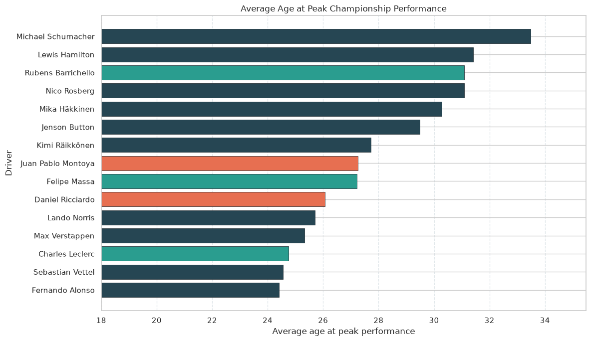
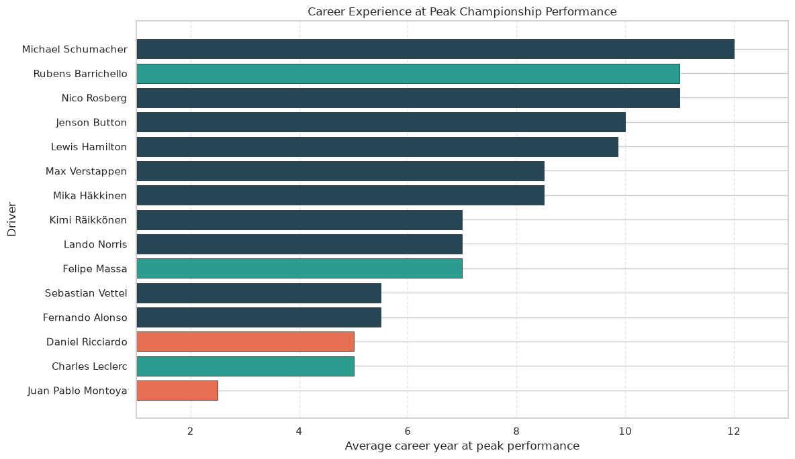
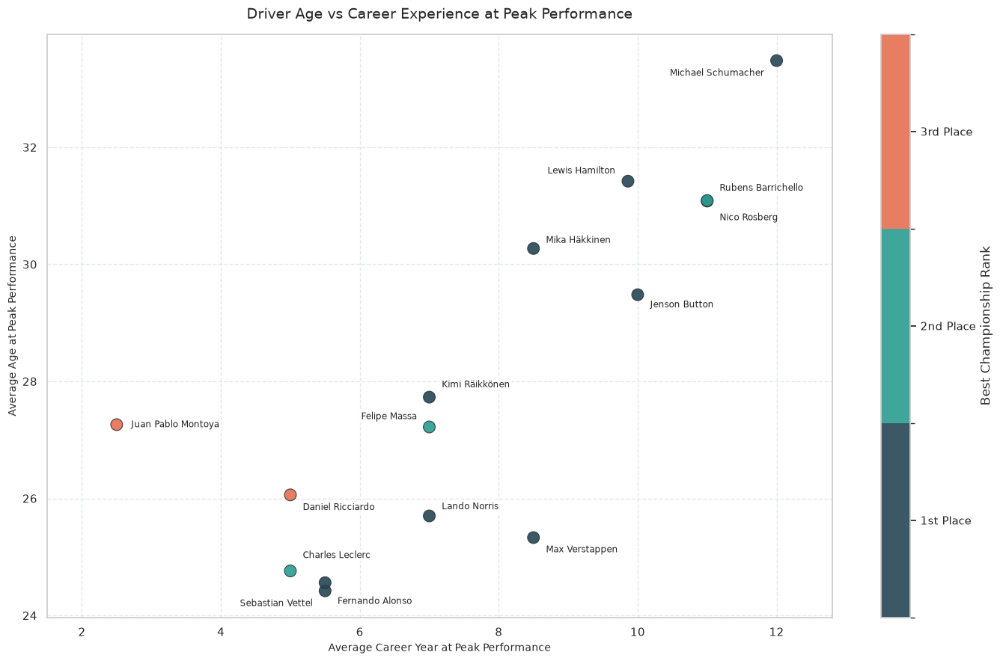
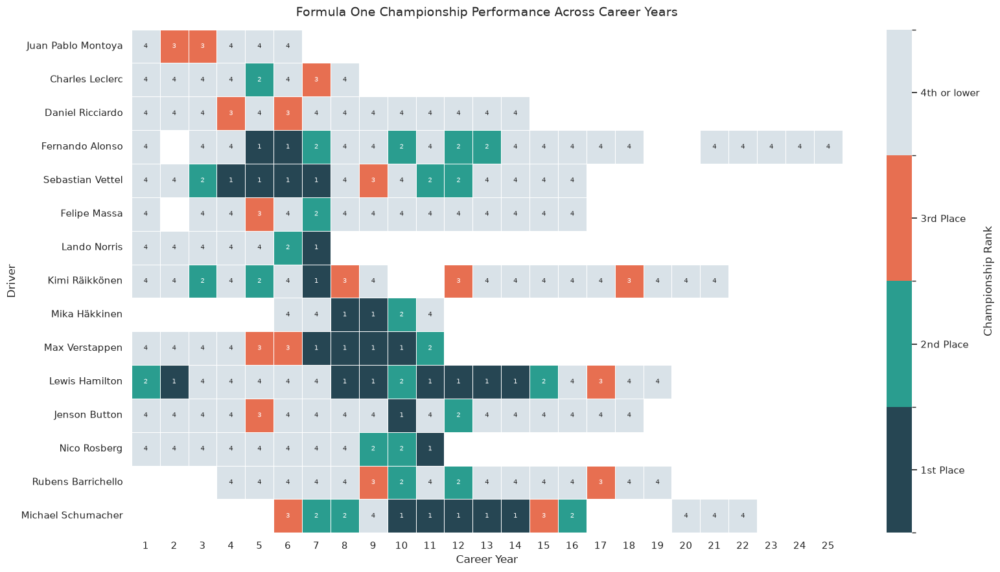
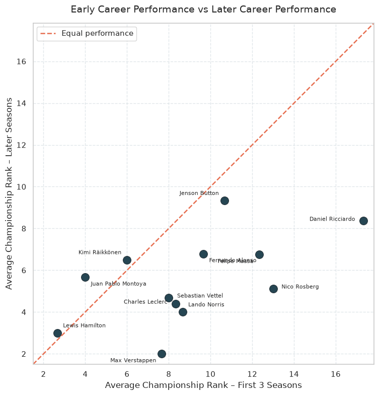
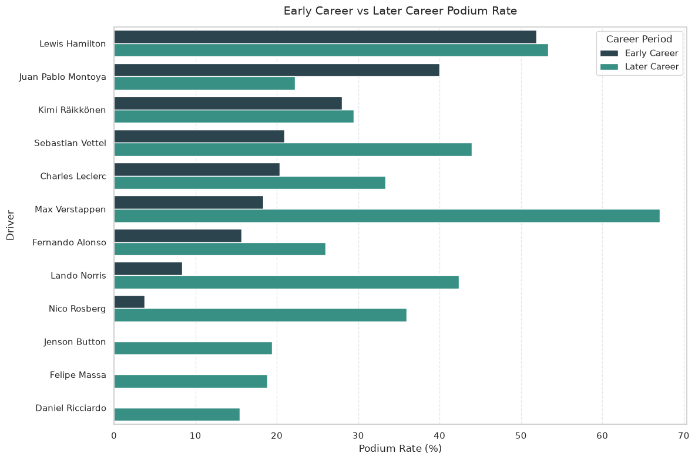
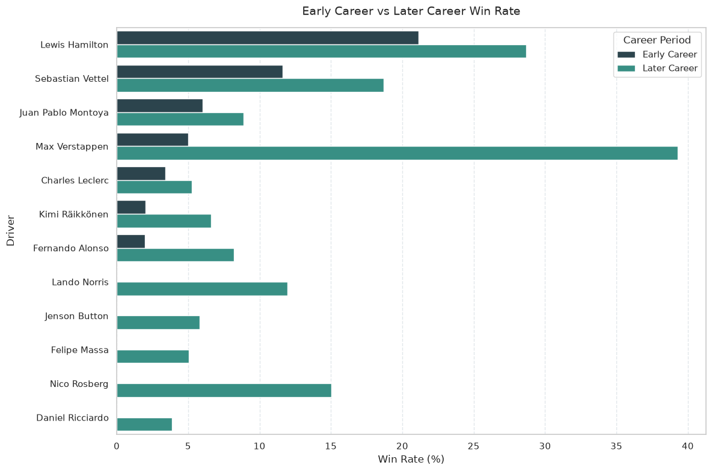

Formula 1 Driver Career Analysis
Research Question
At what age and after how many years in Formula 1 does a driver reach peak performance, and can their early-career results provide indications of their future success?
Objectives
- Examine how driver performance changes across seasons.
- Identify the age associated with each driver's strongest recorded championship performance.
- Explore the relationship between early-career results and later career outcomes.
- Compare career progression among drivers with records available in the dataset.
Initial Driver Selection
Twenty drivers were initially selected to represent different Formula 1 eras. The available results dataset covers 1996–2026, so five of the initially selected drivers are not present. The analysis therefore uses the 15 selected drivers who have records in the available dataset.
Methodology
The analysis uses the project's race results and race calendar datasets. Driver age is calculated from date of birth and race date. Seasonal performance is described using points, wins, podiums, recorded finishing positions, and points-based ranking within each season.
The analysis is limited to the available records. For drivers whose careers began before 1996, the dataset does not contain their complete Formula 1 careers.
1. Project Setup and Data Inventory
We first identify the project directory and inspect the available raw and processed data files. This confirms that the notebook is using the expected project structure before loading the datasets.
Show code · cell 2
from pathlib import Path
import pandas as pd
PROJECT_ROOT = Path.cwd().parent
print("Project root:")
print(PROJECT_ROOT)
print("\nProject folders:")
for folder in ["data/raw", "data/processed", "notebooks"]:
path = PROJECT_ROOT / folder
print(f"{folder}: {'Exists' if path.exists() else 'Missing'}")
print("\nAvailable data files:")
for folder in ["data/raw", "data/processed"]:
path = PROJECT_ROOT / folder
if path.exists():
files = [file for file in path.rglob("*") if file.is_file()]
print(f"\n{folder}: {len(files)} files")
for file in files[:40]:
print(" -", file.relative_to(PROJECT_ROOT))
if len(files) > 40:
print(f" ... and {len(files) - 40} more files")Project root: /mnt/c/Users/sejbi/Downloads/f1-driver-vs-car Project folders: data/raw: Exists data/processed: Exists notebooks: Exists Available data files: data/raw: 2533 files - data/raw/fastf1_circuits_raw.csv - data/raw/fastf1_corners_raw.csv - data/raw/lap_times.csv - data/raw/races.csv - data/raw/results.csv - data/raw/wikipedia_circuits_raw.csv - data/raw/fastf1_cache/fastf1_http_cache.sqlite - data/raw/laps/1996_round_01.json - data/raw/laps/1996_round_02.json - data/raw/laps/1996_round_03.json - data/raw/laps/1996_round_04.json - data/raw/laps/1996_round_05.json - data/raw/laps/1996_round_06.json - data/raw/laps/1996_round_07.json - data/raw/laps/1996_round_08.json - data/raw/laps/1996_round_09.json - data/raw/laps/1996_round_10.json - data/raw/laps/1996_round_11.json - data/raw/laps/1996_round_12.json - data/raw/laps/1996_round_13.json - data/raw/laps/1996_round_14.json - data/raw/laps/1996_round_15.json - data/raw/laps/1996_round_16.json - data/raw/laps/1997_round_01.json - data/raw/laps/1997_round_02.json - data/raw/laps/1997_round_03.json - data/raw/laps/1997_round_04.json - data/raw/laps/1997_round_05.json - data/raw/laps/1997_round_06.json - data/raw/laps/1997_round_07.json - data/raw/laps/1997_round_08.json - data/raw/laps/1997_round_09.json - data/raw/laps/1997_round_10.json - data/raw/laps/1997_round_11.json - data/raw/laps/1997_round_12.json - data/raw/laps/1997_round_13.json - data/raw/laps/1997_round_14.json - data/raw/laps/1997_round_15.json - data/raw/laps/1997_round_16.json - data/raw/laps/1997_round_17.json ... and 2493 more files data/processed: 3 files - data/processed/fastf1_circuits.csv - data/processed/fastf1_corners.csv - data/processed/wikipedia_circuits_cleaned.csv
2. Data Sources and Processed Files
Next, we locate the CSV files relevant to driver and race analysis and inspect the structure of the processed circuit datasets. This helps distinguish the datasets used directly in the current driver analysis from other project data.
Show code · cell 4
data_dir = PROJECT_ROOT / "data"
print("IMPORTANT DATA FILES:\n")
keywords = [
"driver", "standing", "result",
"race", "qualifying", "constructor"
]
for file in sorted(data_dir.rglob("*")):
if file.is_file() and file.suffix.lower() == ".csv":
if any(word in file.name.lower() for word in keywords):
print(file.relative_to(PROJECT_ROOT))
print("\nPROCESSED DATA:\n")
processed_dir = PROJECT_ROOT / "data" / "processed"
for file in sorted(processed_dir.glob("*.csv")):
df = pd.read_csv(file)
print(f"\nFile: {file.name}")
print("Shape:", df.shape)
print("Columns:", df.columns.tolist())IMPORTANT DATA FILES: data/raw/races.csv data/raw/results.csv PROCESSED DATA: File: fastf1_circuits.csv Shape: (191, 10) Columns: ['Year', 'Round', 'Event', 'Country', 'Location', 'CircuitKey', 'CornerCount', 'Rotation', 'MarshalLightsCount', 'MarshalSectorsCount'] File: fastf1_corners.csv Shape: (3119, 7) Columns: ['Year', 'Event', 'CornerNumber', 'X', 'Y', 'Angle', 'Distance'] File: wikipedia_circuits_cleaned.csv Shape: (78, 11) Columns: ['Circuit', 'Type', 'Direction', 'Location', 'Country', 'Turns', 'Grands Prix', 'Season(s)', 'Grands Prix held', 'Circuit_length_km', 'Circuit_length_miles']
3. Loading and Understanding the Main Datasets
The current analysis relies on two main CSV files:
results.csv: race-level results, driver information, date of birth, points, finishing position, and constructor information.races.csv: race dates, event names, circuits, and locations.
We inspect their dimensions, columns, and sample records before carrying out the analysis.
Show code · cell 6
results = pd.read_csv(PROJECT_ROOT / "data/raw/results.csv")
races = pd.read_csv(PROJECT_ROOT / "data/raw/races.csv")
print("RESULTS DATASET")
print("Shape:", results.shape)
print("Columns:", results.columns.tolist())
display(results.head())
print("\nRACES DATASET")
print("Shape:", races.shape)
print("Columns:", races.columns.tolist())
display(races.head())RESULTS DATASET Shape: (12390, 28) Columns: ['season', 'round', 'race_name', 'race_date', 'circuit_id', 'driver_id', 'driver_code', 'driver_first_name', 'driver_last_name', 'driver_date_of_birth', 'driver_nationality', 'constructor_id', 'constructor_name', 'constructor_nationality', 'car_number', 'grid', 'position', 'position_text', 'points', 'laps_completed', 'status', 'race_time', 'race_time_milliseconds', 'fastest_lap_rank', 'fastest_lap_number', 'fastest_lap_time', 'fastest_lap_average_speed', 'fastest_lap_speed_units']
| season | round | race_name | race_date | circuit_id | driver_id | driver_code | driver_first_name | driver_last_name | driver_date_of_birth | ... | points | laps_completed | status | race_time | race_time_milliseconds | fastest_lap_rank | fastest_lap_number | fastest_lap_time | fastest_lap_average_speed | fastest_lap_speed_units | |
|---|---|---|---|---|---|---|---|---|---|---|---|---|---|---|---|---|---|---|---|---|---|
| 0 | 1996 | 1 | Australian Grand Prix | 1996-03-10 | albert_park | damon_hill | NaN | Damon | Hill | 1960-09-17 | ... | 10.0 | 58 | Finished | 1:32:50.400 | 5570400.0 | NaN | NaN | NaN | NaN | NaN |
| 1 | 1996 | 1 | Australian Grand Prix | 1996-03-10 | albert_park | villeneuve | VIL | Jacques | Villeneuve | 1971-04-09 | ... | 6.0 | 58 | Finished | +38.020 | 5608420.0 | NaN | NaN | NaN | NaN | NaN |
| 2 | 1996 | 1 | Australian Grand Prix | 1996-03-10 | albert_park | irvine | NaN | Eddie | Irvine | 1965-11-10 | ... | 4.0 | 58 | Finished | +1:02.571 | 5632971.0 | NaN | NaN | NaN | NaN | NaN |
| 3 | 1996 | 1 | Australian Grand Prix | 1996-03-10 | albert_park | berger | NaN | Gerhard | Berger | 1959-08-27 | ... | 3.0 | 58 | Finished | +1:17.037 | 5647437.0 | NaN | NaN | NaN | NaN | NaN |
| 4 | 1996 | 1 | Australian Grand Prix | 1996-03-10 | albert_park | hakkinen | NaN | Mika | Häkkinen | 1968-09-28 | ... | 2.0 | 58 | Finished | +1:35.071 | 5665471.0 | NaN | NaN | NaN | NaN | NaN |
5 rows × 28 columns
RACES DATASET Shape: (591, 13) Columns: ['season', 'round', 'race_name', 'race_date', 'race_start_time', 'race_url', 'circuit_id', 'circuit_name', 'circuit_url', 'country', 'locality', 'latitude', 'longitude']
| season | round | race_name | race_date | race_start_time | race_url | circuit_id | circuit_name | circuit_url | country | locality | latitude | longitude | |
|---|---|---|---|---|---|---|---|---|---|---|---|---|---|
| 0 | 1996 | 1 | Australian Grand Prix | 1996-03-10 | NaN | https://en.wikipedia.org/wiki/1996_Australian_... | albert_park | Albert Park Grand Prix Circuit | https://en.wikipedia.org/wiki/Albert_Park_Circuit | Australia | Melbourne | -37.8497 | 144.9680 |
| 1 | 1996 | 2 | Brazilian Grand Prix | 1996-03-31 | NaN | https://en.wikipedia.org/wiki/1996_Brazilian_G... | interlagos | Autódromo José Carlos Pace | https://en.wikipedia.org/wiki/Interlagos_Circuit | Brazil | São Paulo | -23.7036 | -46.6997 |
| 2 | 1996 | 3 | Argentine Grand Prix | 1996-04-07 | NaN | https://en.wikipedia.org/wiki/1996_Argentine_G... | galvez | Autódromo Juan y Oscar Gálvez | https://en.wikipedia.org/wiki/Autódromo_Oscar_... | Argentina | Buenos Aires | -34.6943 | -58.4593 |
| 3 | 1996 | 4 | European Grand Prix | 1996-04-28 | NaN | https://en.wikipedia.org/wiki/1996_European_Gr... | nurburgring | Nürburgring | https://en.wikipedia.org/wiki/N%C3%BCrburgring | Germany | Nürburg | 50.3356 | 6.9475 |
| 4 | 1996 | 5 | San Marino Grand Prix | 1996-05-05 | NaN | https://en.wikipedia.org/wiki/1996_San_Marino_... | imola | Autodromo Enzo e Dino Ferrari | https://en.wikipedia.org/wiki/Imola_Circuit | Italy | Imola | 44.3439 | 11.7167 |
4. Dataset Coverage and Driver Availability
Before selecting the final analysis group, we check the years covered by the results dataset and verify which of the 20 initially selected drivers are present.
The dataset covers 1996–2026. Drivers whose records are not available in this period cannot be included in the current analysis without changing the dataset, which we are not doing.
Show code · cell 8
print("DATASET COVERAGE")
print("First season:", results["season"].min())
print("Last season:", results["season"].max())
print("\nDRIVER COVERAGE")
print("Unique drivers:", results["driver_id"].nunique())
selected_drivers = [
"Michael Schumacher",
"Lewis Hamilton",
"Ayrton Senna",
"Alain Prost",
"Sebastian Vettel",
"Max Verstappen",
"Fernando Alonso",
"Niki Lauda",
"Kimi Räikkönen",
"Mika Häkkinen",
"Jenson Button",
"Nigel Mansell",
"Nico Rosberg",
"Jackie Stewart",
"Charles Leclerc",
"Lando Norris",
"Daniel Ricciardo",
"Felipe Massa",
"Rubens Barrichello",
"Juan Pablo Montoya"
]
available_drivers = (
results[["driver_first_name", "driver_last_name", "driver_id"]]
.drop_duplicates()
.copy()
)
available_drivers["full_name"] = (
available_drivers["driver_first_name"].str.strip()
+ " "
+ available_drivers["driver_last_name"].str.strip()
)
available_drivers["name_key"] = (
available_drivers["full_name"].str.casefold()
)
selected_name_keys = {name.casefold() for name in selected_drivers}
available_selected_drivers = available_drivers[
available_drivers["name_key"].isin(selected_name_keys)
].copy()
selected_driver_names = (
available_selected_drivers["full_name"].drop_duplicates().tolist()
)
print("\nSELECTED DRIVER AVAILABILITY")
for driver in selected_drivers:
found = driver.casefold() in set(available_selected_drivers["name_key"])
print(f"{driver}: {'FOUND' if found else 'NOT FOUND'}")
print(
"\nAvailable selected drivers:",
len(available_selected_drivers["driver_id"].unique())
)DATASET COVERAGE First season: 1996 Last season: 2026 DRIVER COVERAGE Unique drivers: 149 SELECTED DRIVER AVAILABILITY Michael Schumacher: FOUND Lewis Hamilton: FOUND Ayrton Senna: NOT FOUND Alain Prost: NOT FOUND Sebastian Vettel: FOUND Max Verstappen: FOUND Fernando Alonso: FOUND Niki Lauda: NOT FOUND Kimi Räikkönen: FOUND Mika Häkkinen: FOUND Jenson Button: FOUND Nigel Mansell: NOT FOUND Nico Rosberg: FOUND Jackie Stewart: NOT FOUND Charles Leclerc: FOUND Lando Norris: FOUND Daniel Ricciardo: FOUND Felipe Massa: FOUND Rubens Barrichello: FOUND Juan Pablo Montoya: FOUND Available selected drivers: 15
5. Driver Selection and Career Overview
Fifteen of the 20 initially selected drivers have records in the dataset. We retain those 15 drivers and summarize the career information available for each one.
The first and last seasons shown below refer to the first and last seasons recorded in this dataset. They do not necessarily represent the driver's actual Formula 1 debut or retirement year. The number of seasons counts distinct seasons with records, not necessarily consecutive years of experience.
Show code · cell 10
selected_driver_ids = available_selected_drivers["driver_id"].drop_duplicates()
selected_results = results[
results["driver_id"].isin(selected_driver_ids)
].copy()
driver_summary = (
selected_results.groupby(
["driver_id", "driver_first_name", "driver_last_name"]
)
.agg(
first_season=("season", "min"),
last_season=("season", "max"),
seasons_with_records=("season", "nunique"),
race_entries=("race_name", "count"),
total_points=("points", "sum")
)
.reset_index()
)
driver_summary["full_name"] = (
driver_summary["driver_first_name"] + " "
+ driver_summary["driver_last_name"]
)
driver_summary = driver_summary.sort_values(
"first_season"
).reset_index(drop=True)
display(
driver_summary[
[
"full_name",
"first_season",
"last_season",
"seasons_with_records",
"race_entries",
"total_points"
]
]
)
print("Number of selected drivers:", driver_summary["driver_id"].nunique())| full_name | first_season | last_season | seasons_with_records | race_entries | total_points | |
|---|---|---|---|---|---|---|
| 0 | Rubens Barrichello | 1996 | 2011 | 16 | 277 | 626.0 |
| 1 | Mika Häkkinen | 1996 | 2001 | 6 | 99 | 360.0 |
| 2 | Michael Schumacher | 1996 | 2012 | 14 | 239 | 1263.0 |
| 3 | Jenson Button | 2000 | 2017 | 18 | 309 | 1235.0 |
| 4 | Juan Pablo Montoya | 2001 | 2006 | 6 | 95 | 307.0 |
| 5 | Kimi Räikkönen | 2001 | 2021 | 19 | 352 | 1873.0 |
| 6 | Fernando Alonso | 2001 | 2026 | 23 | 448 | 2387.0 |
| 7 | Felipe Massa | 2002 | 2017 | 15 | 271 | 1167.0 |
| 8 | Nico Rosberg | 2006 | 2016 | 11 | 206 | 1594.5 |
| 9 | Sebastian Vettel | 2007 | 2022 | 16 | 300 | 3098.0 |
| 10 | Lewis Hamilton | 2007 | 2026 | 20 | 400 | 5189.5 |
| 11 | Daniel Ricciardo | 2011 | 2024 | 14 | 257 | 1320.0 |
| 12 | Max Verstappen | 2015 | 2026 | 12 | 253 | 3560.5 |
| 13 | Charles Leclerc | 2018 | 2026 | 9 | 193 | 1803.0 |
| 14 | Lando Norris | 2019 | 2026 | 8 | 172 | 1557.0 |
Number of selected drivers: 15
6. Feature Engineering
6.1 Preparing Race-Level Driver Data
In this step, we prepare the selected drivers' race records for analysis. We convert the race date and date of birth into datetime values, calculate each driver's age at the time of every race, and convert the recorded finishing position into a numeric variable.
Age is calculated for each race rather than using a driver's age at the beginning or end of a season. This allows us to calculate a season-level average age in the next step.
The dataset's first available season is not necessarily a driver's actual F1 debut. Therefore, years of experience cannot yet be interpreted as complete career experience for every driver.
Show code · cell 12
driver_results = selected_results.copy()
driver_results["race_date"] = pd.to_datetime(
driver_results["race_date"],
errors="coerce"
)
driver_results["driver_date_of_birth"] = pd.to_datetime(
driver_results["driver_date_of_birth"],
errors="coerce"
)
driver_results["age_at_race"] = (
(driver_results["race_date"]
- driver_results["driver_date_of_birth"]).dt.days
/ 365.2425
)
driver_results["position_numeric"] = pd.to_numeric(
driver_results["position"],
errors="coerce"
)
print("Selected driver race records:", len(driver_results))
print(
"Records with missing date of birth:",
driver_results["driver_date_of_birth"].isna().sum()
)
print(
"Records with missing calculated age:",
driver_results["age_at_race"].isna().sum()
)
print(
"Records with non-numeric finishing position:",
driver_results["position_numeric"].isna().sum()
)
display(
driver_results[
[
"driver_first_name",
"driver_last_name",
"season",
"race_name",
"race_date",
"age_at_race",
"position",
"position_numeric",
"points"
]
].head()
)Selected driver race records: 3871 Records with missing date of birth: 0 Records with missing calculated age: 0 Records with non-numeric finishing position: 0
| driver_first_name | driver_last_name | season | race_name | race_date | age_at_race | position | position_numeric | points | |
|---|---|---|---|---|---|---|---|---|---|
| 4 | Mika | Häkkinen | 1996 | Australian Grand Prix | 1996-03-10 | 27.447518 | 5 | 5 | 2.0 |
| 12 | Michael | Schumacher | 1996 | Australian Grand Prix | 1996-03-10 | 27.181941 | 13 | 13 | 0.0 |
| 14 | Rubens | Barrichello | 1996 | Australian Grand Prix | 1996-03-10 | 23.797888 | 15 | 15 | 0.0 |
| 22 | Michael | Schumacher | 1996 | Brazilian Grand Prix | 1996-03-31 | 27.239437 | 3 | 3 | 4.0 |
| 23 | Mika | Häkkinen | 1996 | Brazilian Grand Prix | 1996-03-31 | 27.505014 | 4 | 4 | 3.0 |
6.2 Creating Seasonal Performance Metrics
We now aggregate race-level records by driver and season. The resulting table contains the average age during the season, race entries, total points, wins, podiums, and average numeric finishing position.
We also calculate a points-based ranking for every driver in each season using all drivers in the results dataset, not just the 15 selected drivers. This makes the ranking relative to the full field represented in the data.
The points-based ranking is a descriptive calculation from the available results.csv records. Tied point totals receive the same rank; the calculation does not apply Formula 1 championship tie-break rules.
Show code · cell 14
season_analysis = (
driver_results.groupby(
[
"driver_id",
"driver_first_name",
"driver_last_name",
"season"
]
)
.agg(
race_entries=("race_name", "count"),
total_points=("points", "sum"),
average_age=("age_at_race", "mean"),
wins=("position_numeric", lambda values: values.eq(1).sum()),
podiums=(
"position_numeric",
lambda values: values.between(1, 3).sum()
),
average_finish_position=("position_numeric", "mean"),
numeric_positions=("position_numeric", "count")
)
.reset_index()
)
all_driver_points = (
results.groupby(["season", "driver_id"], as_index=False)
.agg(season_points=("points", "sum"))
)
all_driver_points["points_rank"] = (
all_driver_points.groupby("season")["season_points"]
.rank(method="min", ascending=False)
)
season_analysis = season_analysis.merge(
all_driver_points[["season", "driver_id", "points_rank"]],
on=["season", "driver_id"],
how="left"
)
season_analysis["full_name"] = (
season_analysis["driver_first_name"] + " "
+ season_analysis["driver_last_name"]
)
season_analysis = season_analysis.sort_values(
["full_name", "season"]
).reset_index(drop=True)
display(
season_analysis[
[
"full_name",
"season",
"average_age",
"race_entries",
"total_points",
"wins",
"podiums",
"average_finish_position",
"numeric_positions",
"points_rank"
]
].head(20)
)
print("Season-driver records:", len(season_analysis))
print("Drivers included:", season_analysis["driver_id"].nunique())
print(
"Seasons covered:",
season_analysis["season"].min(),
"to",
season_analysis["season"].max()
)| full_name | season | average_age | race_entries | total_points | wins | podiums | average_finish_position | numeric_positions | points_rank | |
|---|---|---|---|---|---|---|---|---|---|---|
| 0 | Charles Leclerc | 2018 | 20.774326 | 21 | 39.0 | 0 | 0 | 12.380952 | 21 | 13.0 |
| 1 | Charles Leclerc | 2019 | 21.779138 | 21 | 264.0 | 2 | 10 | 5.571429 | 21 | 4.0 |
| 2 | Charles Leclerc | 2020 | 22.932226 | 17 | 98.0 | 0 | 2 | 9.882353 | 17 | 8.0 |
| 3 | Charles Leclerc | 2021 | 23.822031 | 22 | 159.0 | 0 | 1 | 7.727273 | 22 | 7.0 |
| 4 | Charles Leclerc | 2022 | 24.763747 | 22 | 291.0 | 3 | 11 | 5.500000 | 22 | 2.0 |
| 5 | Charles Leclerc | 2023 | 25.779510 | 22 | 185.0 | 0 | 6 | 8.227273 | 22 | 5.0 |
| 6 | Charles Leclerc | 2024 | 26.763497 | 24 | 327.0 | 3 | 13 | 4.541667 | 24 | 3.0 |
| 7 | Charles Leclerc | 2025 | 27.770819 | 24 | 225.0 | 0 | 7 | 6.750000 | 24 | 5.0 |
| 8 | Charles Leclerc | 2026 | 28.766641 | 20 | 215.0 | 1 | 6 | 6.200000 | 20 | 5.0 |
| 9 | Daniel Ricciardo | 2011 | 22.220604 | 11 | 0.0 | 0 | 0 | 19.272727 | 11 | 20.0 |
| 10 | Daniel Ricciardo | 2012 | 23.075902 | 20 | 10.0 | 0 | 0 | 12.300000 | 20 | 18.0 |
| 11 | Daniel Ricciardo | 2013 | 24.073408 | 19 | 20.0 | 0 | 0 | 13.368421 | 19 | 14.0 |
| 12 | Daniel Ricciardo | 2014 | 25.053867 | 19 | 238.0 | 3 | 8 | 6.105263 | 19 | 3.0 |
| 13 | Daniel Ricciardo | 2015 | 26.066604 | 19 | 92.0 | 0 | 2 | 9.157895 | 19 | 8.0 |
| 14 | Daniel Ricciardo | 2016 | 27.071512 | 21 | 256.0 | 1 | 8 | 4.380952 | 21 | 3.0 |
| 15 | Daniel Ricciardo | 2017 | 28.073266 | 20 | 200.0 | 1 | 9 | 8.000000 | 20 | 5.0 |
| 16 | Daniel Ricciardo | 2018 | 29.067446 | 21 | 170.0 | 2 | 2 | 9.190476 | 21 | 6.0 |
| 17 | Daniel Ricciardo | 2019 | 30.072258 | 21 | 54.0 | 0 | 0 | 12.142857 | 21 | 9.0 |
| 18 | Daniel Ricciardo | 2020 | 31.225346 | 17 | 119.0 | 0 | 2 | 7.470588 | 17 | 5.0 |
| 19 | Daniel Ricciardo | 2021 | 32.115151 | 22 | 114.0 | 1 | 1 | 8.590909 | 22 | 8.0 |
Season-driver records: 207 Drivers included: 15 Seasons covered: 1996 to 2026
7. Career Timeline and Experience
In this section, we establish the actual Formula 1 debut year of each selected driver and use it to calculate their career experience across seasons.
The first season recorded in our dataset is not necessarily the driver's actual debut season. The results dataset starts in 1996, while some selected drivers began competing in Formula 1 before that year.
We therefore use verified debut years rather than assuming that the first available record represents the beginning of a driver's career.
The main variables created in this section are:
debut_year: the calendar year in which the driver made their Formula 1 debut.years_since_debut: the number of calendar years elapsed since their debut.career_year: the career-year index, starting at 1 in the debut season.
This distinction allows us to compare drivers at similar points in their careers rather than simply comparing their calendar seasons.
7.1 Verifying Each Driver's F1 Debut Year
We assign the actual Formula 1 debut year to each of the 15 selected drivers.
These years are based on historical Formula 1 and FIA statistics. This step is particularly important for drivers whose careers started before the results dataset's coverage begins in 1996.
We also compare each driver's actual debut year with their first recorded season in our dataset. This identifies which careers are only partially represented.
Show code · cell 17
debut_years = {
"Michael Schumacher": 1991,
"Lewis Hamilton": 2007,
"Sebastian Vettel": 2007,
"Max Verstappen": 2015,
"Fernando Alonso": 2001,
"Kimi Räikkönen": 2001,
"Mika Häkkinen": 1991,
"Jenson Button": 2000,
"Nico Rosberg": 2006,
"Charles Leclerc": 2018,
"Lando Norris": 2019,
"Daniel Ricciardo": 2011,
"Felipe Massa": 2002,
"Rubens Barrichello": 1993,
"Juan Pablo Montoya": 2001
}
debut_year_table = (
pd.DataFrame.from_dict(
debut_years,
orient="index",
columns=["debut_year"]
)
.rename_axis("full_name")
.reset_index()
)
selected_names = set(driver_summary["full_name"])
debut_names = set(debut_year_table["full_name"])
missing_debut_years = sorted(selected_names - debut_names)
unexpected_debut_names = sorted(debut_names - selected_names)
if missing_debut_years:
raise ValueError(
f"Missing debut years for: {missing_debut_years}"
)
if unexpected_debut_names:
raise ValueError(
f"Unexpected drivers in debut_years: {unexpected_debut_names}"
)
debut_coverage = debut_year_table.merge(
driver_summary[
[
"full_name",
"first_season",
"last_season",
"seasons_with_records"
]
],
on="full_name",
how="left",
validate="one_to_one"
)
debut_coverage["years_before_dataset_starts"] = (
debut_coverage["first_season"]
- debut_coverage["debut_year"]
)
debut_coverage["debut_season_in_dataset"] = (
debut_coverage["years_before_dataset_starts"].eq(0)
)
if (debut_coverage["years_before_dataset_starts"] < 0).any():
raise ValueError(
"A recorded season occurs before the driver's debut year."
)
print("Selected drivers:", len(selected_names))
print(
"Drivers whose debut season is included:",
debut_coverage["debut_season_in_dataset"].sum()
)
print(
"Drivers whose careers began before dataset coverage:",
(~debut_coverage["debut_season_in_dataset"]).sum()
)
display(
debut_coverage.sort_values("debut_year")[
[
"full_name",
"debut_year",
"first_season",
"last_season",
"years_before_dataset_starts",
"debut_season_in_dataset"
]
].reset_index(drop=True)
)Selected drivers: 15 Drivers whose debut season is included: 12 Drivers whose careers began before dataset coverage: 3
| full_name | debut_year | first_season | last_season | years_before_dataset_starts | debut_season_in_dataset | |
|---|---|---|---|---|---|---|
| 0 | Michael Schumacher | 1991 | 1996 | 2012 | 5 | False |
| 1 | Mika Häkkinen | 1991 | 1996 | 2001 | 5 | False |
| 2 | Rubens Barrichello | 1993 | 1996 | 2011 | 3 | False |
| 3 | Jenson Button | 2000 | 2000 | 2017 | 0 | True |
| 4 | Fernando Alonso | 2001 | 2001 | 2026 | 0 | True |
| 5 | Kimi Räikkönen | 2001 | 2001 | 2021 | 0 | True |
| 6 | Juan Pablo Montoya | 2001 | 2001 | 2006 | 0 | True |
| 7 | Felipe Massa | 2002 | 2002 | 2017 | 0 | True |
| 8 | Nico Rosberg | 2006 | 2006 | 2016 | 0 | True |
| 9 | Lewis Hamilton | 2007 | 2007 | 2026 | 0 | True |
| 10 | Sebastian Vettel | 2007 | 2007 | 2022 | 0 | True |
| 11 | Daniel Ricciardo | 2011 | 2011 | 2024 | 0 | True |
| 12 | Max Verstappen | 2015 | 2015 | 2026 | 0 | True |
| 13 | Charles Leclerc | 2018 | 2018 | 2026 | 0 | True |
| 14 | Lando Norris | 2019 | 2019 | 2026 | 0 | True |
7.2 Calculating Career Experience by Season
Now that we have the actual debut year for every selected driver, we can calculate how far each season is from the beginning of their Formula 1 career.
We create two variables:
years_since_debut: debut season = 0, following calendar year = 1, and so on.career_year: debut season = 1, following calendar year = 2, and so on.
We merge the debut-year information into season_analysis, so each driver-season record includes the driver's age, performance metrics, and career experience.
These variables measure elapsed calendar years since debut. They do not count only the seasons in which a driver actively competed, so career breaks may create gaps in the timeline.
Show code · cell 19
career_timeline = season_analysis.merge(
debut_year_table,
on="full_name",
how="left",
validate="many_to_one"
)
if career_timeline["debut_year"].isna().any():
missing_names = (
career_timeline.loc[
career_timeline["debut_year"].isna(),
"full_name"
]
.unique()
.tolist()
)
raise ValueError(
f"Missing debut year for drivers: {missing_names}"
)
career_timeline["years_since_debut"] = (
career_timeline["season"] - career_timeline["debut_year"]
)
career_timeline["career_year"] = (
career_timeline["years_since_debut"] + 1
)
if (career_timeline["years_since_debut"] < 0).any():
raise ValueError(
"A season occurs before a driver's debut year."
)
career_timeline = career_timeline.sort_values(
["full_name", "season"]
).reset_index(drop=True)
print("Driver-season records:", len(career_timeline))
print(
"Drivers included:",
career_timeline["driver_id"].nunique()
)
print(
"Career years covered:",
career_timeline["career_year"].min(),
"to",
career_timeline["career_year"].max()
)
display(
career_timeline[
[
"full_name",
"season",
"debut_year",
"career_year",
"years_since_debut",
"average_age",
"total_points",
"points_rank",
"wins",
"podiums"
]
].head(25)
)Driver-season records: 207 Drivers included: 15 Career years covered: 1 to 26
| full_name | season | debut_year | career_year | years_since_debut | average_age | total_points | points_rank | wins | podiums | |
|---|---|---|---|---|---|---|---|---|---|---|
| 0 | Charles Leclerc | 2018 | 2018 | 1 | 0 | 20.774326 | 39.0 | 13.0 | 0 | 0 |
| 1 | Charles Leclerc | 2019 | 2018 | 2 | 1 | 21.779138 | 264.0 | 4.0 | 2 | 10 |
| 2 | Charles Leclerc | 2020 | 2018 | 3 | 2 | 22.932226 | 98.0 | 8.0 | 0 | 2 |
| 3 | Charles Leclerc | 2021 | 2018 | 4 | 3 | 23.822031 | 159.0 | 7.0 | 0 | 1 |
| 4 | Charles Leclerc | 2022 | 2018 | 5 | 4 | 24.763747 | 291.0 | 2.0 | 3 | 11 |
| 5 | Charles Leclerc | 2023 | 2018 | 6 | 5 | 25.779510 | 185.0 | 5.0 | 0 | 6 |
| 6 | Charles Leclerc | 2024 | 2018 | 7 | 6 | 26.763497 | 327.0 | 3.0 | 3 | 13 |
| 7 | Charles Leclerc | 2025 | 2018 | 8 | 7 | 27.770819 | 225.0 | 5.0 | 0 | 7 |
| 8 | Charles Leclerc | 2026 | 2018 | 9 | 8 | 28.766641 | 215.0 | 5.0 | 1 | 6 |
| 9 | Daniel Ricciardo | 2011 | 2011 | 1 | 0 | 22.220604 | 0.0 | 20.0 | 0 | 0 |
| 10 | Daniel Ricciardo | 2012 | 2011 | 2 | 1 | 23.075902 | 10.0 | 18.0 | 0 | 0 |
| 11 | Daniel Ricciardo | 2013 | 2011 | 3 | 2 | 24.073408 | 20.0 | 14.0 | 0 | 0 |
| 12 | Daniel Ricciardo | 2014 | 2011 | 4 | 3 | 25.053867 | 238.0 | 3.0 | 3 | 8 |
| 13 | Daniel Ricciardo | 2015 | 2011 | 5 | 4 | 26.066604 | 92.0 | 8.0 | 0 | 2 |
| 14 | Daniel Ricciardo | 2016 | 2011 | 6 | 5 | 27.071512 | 256.0 | 3.0 | 1 | 8 |
| 15 | Daniel Ricciardo | 2017 | 2011 | 7 | 6 | 28.073266 | 200.0 | 5.0 | 1 | 9 |
| 16 | Daniel Ricciardo | 2018 | 2011 | 8 | 7 | 29.067446 | 170.0 | 6.0 | 2 | 2 |
| 17 | Daniel Ricciardo | 2019 | 2011 | 9 | 8 | 30.072258 | 54.0 | 9.0 | 0 | 0 |
| 18 | Daniel Ricciardo | 2020 | 2011 | 10 | 9 | 31.225346 | 119.0 | 5.0 | 0 | 2 |
| 19 | Daniel Ricciardo | 2021 | 2011 | 11 | 10 | 32.115151 | 114.0 | 8.0 | 1 | 1 |
| 20 | Daniel Ricciardo | 2022 | 2011 | 12 | 11 | 33.056867 | 34.0 | 12.0 | 0 | 0 |
| 21 | Daniel Ricciardo | 2023 | 2011 | 13 | 12 | 34.273120 | 6.0 | 16.0 | 0 | 0 |
| 22 | Daniel Ricciardo | 2024 | 2011 | 14 | 13 | 34.951512 | 7.0 | 17.0 | 0 | 0 |
| 23 | Felipe Massa | 2002 | 2002 | 1 | 0 | 21.143316 | 4.0 | 12.0 | 0 | 0 |
| 24 | Felipe Massa | 2004 | 2002 | 3 | 2 | 23.183228 | 12.0 | 12.0 | 0 | 0 |
7.3 Reviewing the Career Timeline
Finally, we create a summary showing how much of each selected driver's career is represented in our dataset.
We compare the actual debut year with the first and last recorded seasons. We also examine the number of seasons with available records and the career-year range covered by the dataset.
This summary helps us identify differences in data coverage before comparing drivers' performance at different career stages.
Show code · cell 21
career_experience_summary = (
career_timeline.groupby("full_name", as_index=False)
.agg(
debut_year=("debut_year", "first"),
first_recorded_season=("season", "min"),
last_recorded_season=("season", "max"),
seasons_with_records=("season", "nunique"),
first_career_year_in_dataset=("career_year", "min"),
last_career_year_in_dataset=("career_year", "max")
)
)
career_experience_summary[
"years_before_dataset_starts"
] = (
career_experience_summary["first_recorded_season"]
- career_experience_summary["debut_year"]
)
career_experience_summary = career_experience_summary.sort_values(
"debut_year"
).reset_index(drop=True)
display(career_experience_summary)
print(
"Total drivers:",
career_experience_summary["full_name"].nunique()
)
print(
"Total driver-season records:",
len(career_timeline)
)| full_name | debut_year | first_recorded_season | last_recorded_season | seasons_with_records | first_career_year_in_dataset | last_career_year_in_dataset | years_before_dataset_starts | |
|---|---|---|---|---|---|---|---|---|
| 0 | Michael Schumacher | 1991 | 1996 | 2012 | 14 | 6 | 22 | 5 |
| 1 | Mika Häkkinen | 1991 | 1996 | 2001 | 6 | 6 | 11 | 5 |
| 2 | Rubens Barrichello | 1993 | 1996 | 2011 | 16 | 4 | 19 | 3 |
| 3 | Jenson Button | 2000 | 2000 | 2017 | 18 | 1 | 18 | 0 |
| 4 | Juan Pablo Montoya | 2001 | 2001 | 2006 | 6 | 1 | 6 | 0 |
| 5 | Fernando Alonso | 2001 | 2001 | 2026 | 23 | 1 | 26 | 0 |
| 6 | Kimi Räikkönen | 2001 | 2001 | 2021 | 19 | 1 | 21 | 0 |
| 7 | Felipe Massa | 2002 | 2002 | 2017 | 15 | 1 | 16 | 0 |
| 8 | Nico Rosberg | 2006 | 2006 | 2016 | 11 | 1 | 11 | 0 |
| 9 | Sebastian Vettel | 2007 | 2007 | 2022 | 16 | 1 | 16 | 0 |
| 10 | Lewis Hamilton | 2007 | 2007 | 2026 | 20 | 1 | 20 | 0 |
| 11 | Daniel Ricciardo | 2011 | 2011 | 2024 | 14 | 1 | 14 | 0 |
| 12 | Max Verstappen | 2015 | 2015 | 2026 | 12 | 1 | 12 | 0 |
| 13 | Charles Leclerc | 2018 | 2018 | 2026 | 9 | 1 | 9 | 0 |
| 14 | Lando Norris | 2019 | 2019 | 2026 | 8 | 1 | 8 | 0 |
Total drivers: 15 Total driver-season records: 207
Data Coverage Limitation: 2026 Season
The 2026 Formula One season is still ongoing as of November 15, 2026.
Therefore, the 2026 driver-season records represent partial-season results rather than final championship performance.
For comparisons between complete seasons and peak-performance analysis, the 2026 season will be excluded. However, its available data may still be retained for descriptive analysis of current driver performance.
8. Peak Performance Analysis
In this section, we identify the strongest recorded championship performances of each selected driver and examine the age and career experience associated with those performances.
The primary performance indicator is the driver's points-based championship rank within each season. Wins, podiums, win rate, podium rate, and average finishing position are used as supporting indicators.
We focus on complete seasons to ensure that partial-season results do not distort the comparison.
For each driver, we identify every season in which they achieved their best recorded championship rank. If a driver achieved the same best rank in multiple seasons, all those seasons are retained.
This allows us to examine whether peak performance occurred at a particular age and career stage, and whether it was sustained across multiple seasons.
8.1 Preparing Complete Seasons for Peak Analysis
Before identifying peak performance, we exclude the 2026 season because it is still incomplete as of November 15, 2026.
The official Formula One calendar lists three remaining race weekends in 2026: Las Vegas, Qatar, and Abu Dhabi.
We create a separate analysis table called complete_season_analysis. This does not modify the original dataset or the career_timeline table.
We also calculate win rate and podium rate as percentages of a driver's recorded race entries. These rates help us compare seasons with different numbers of races.
Show code · cell 25
PARTIAL_SEASONS = [2026]
complete_season_analysis = career_timeline.loc[
~career_timeline["season"].isin(PARTIAL_SEASONS)
].copy()
if complete_season_analysis.empty:
raise ValueError("No complete seasons available for analysis.")
if complete_season_analysis.duplicated(
["driver_id", "season"]
).any():
raise ValueError(
"Duplicate driver-season records were found."
)
if complete_season_analysis["race_entries"].le(0).any():
raise ValueError(
"Some driver-season records have zero race entries."
)
complete_season_analysis["win_rate_pct"] = (
complete_season_analysis["wins"]
/ complete_season_analysis["race_entries"]
* 100
)
complete_season_analysis["podium_rate_pct"] = (
complete_season_analysis["podiums"]
/ complete_season_analysis["race_entries"]
* 100
)
excluded_seasons = sorted(
set(career_timeline["season"])
.intersection(PARTIAL_SEASONS)
)
print("Excluded partial seasons:", excluded_seasons)
print(
"Complete seasons:",
sorted(complete_season_analysis["season"].unique())
)
print(
"Driver-season records:",
len(complete_season_analysis)
)
print(
"Drivers included:",
complete_season_analysis["driver_id"].nunique()
)
display(
complete_season_analysis[
[
"full_name",
"season",
"career_year",
"average_age",
"points_rank",
"wins",
"podiums",
"win_rate_pct",
"podium_rate_pct"
]
].head(15)
)Excluded partial seasons: [2026] Complete seasons: [np.int64(1996), np.int64(1997), np.int64(1998), np.int64(1999), np.int64(2000), np.int64(2001), np.int64(2002), np.int64(2003), np.int64(2004), np.int64(2005), np.int64(2006), np.int64(2007), np.int64(2008), np.int64(2009), np.int64(2010), np.int64(2011), np.int64(2012), np.int64(2013), np.int64(2014), np.int64(2015), np.int64(2016), np.int64(2017), np.int64(2018), np.int64(2019), np.int64(2020), np.int64(2021), np.int64(2022), np.int64(2023), np.int64(2024), np.int64(2025)] Driver-season records: 202 Drivers included: 15
| full_name | season | career_year | average_age | points_rank | wins | podiums | win_rate_pct | podium_rate_pct | |
|---|---|---|---|---|---|---|---|---|---|
| 0 | Charles Leclerc | 2018 | 1 | 20.774326 | 13.0 | 0 | 0 | 0.000000 | 0.000000 |
| 1 | Charles Leclerc | 2019 | 2 | 21.779138 | 4.0 | 2 | 10 | 9.523810 | 47.619048 |
| 2 | Charles Leclerc | 2020 | 3 | 22.932226 | 8.0 | 0 | 2 | 0.000000 | 11.764706 |
| 3 | Charles Leclerc | 2021 | 4 | 23.822031 | 7.0 | 0 | 1 | 0.000000 | 4.545455 |
| 4 | Charles Leclerc | 2022 | 5 | 24.763747 | 2.0 | 3 | 11 | 13.636364 | 50.000000 |
| 5 | Charles Leclerc | 2023 | 6 | 25.779510 | 5.0 | 0 | 6 | 0.000000 | 27.272727 |
| 6 | Charles Leclerc | 2024 | 7 | 26.763497 | 3.0 | 3 | 13 | 12.500000 | 54.166667 |
| 7 | Charles Leclerc | 2025 | 8 | 27.770819 | 5.0 | 0 | 7 | 0.000000 | 29.166667 |
| 9 | Daniel Ricciardo | 2011 | 1 | 22.220604 | 20.0 | 0 | 0 | 0.000000 | 0.000000 |
| 10 | Daniel Ricciardo | 2012 | 2 | 23.075902 | 18.0 | 0 | 0 | 0.000000 | 0.000000 |
| 11 | Daniel Ricciardo | 2013 | 3 | 24.073408 | 14.0 | 0 | 0 | 0.000000 | 0.000000 |
| 12 | Daniel Ricciardo | 2014 | 4 | 25.053867 | 3.0 | 3 | 8 | 15.789474 | 42.105263 |
| 13 | Daniel Ricciardo | 2015 | 5 | 26.066604 | 8.0 | 0 | 2 | 0.000000 | 10.526316 |
| 14 | Daniel Ricciardo | 2016 | 6 | 27.071512 | 3.0 | 1 | 8 | 4.761905 | 38.095238 |
| 15 | Daniel Ricciardo | 2017 | 7 | 28.073266 | 5.0 | 1 | 9 | 5.000000 | 45.000000 |
8.2 Identifying Each Driver's Best Championship Seasons
We now identify the best championship rank achieved by each driver across the complete seasons available in the dataset.
A lower points rank represents a stronger championship position. For example, rank 1 represents the highest position.
For every driver, we calculate the minimum recorded points rank and retain all seasons in which that rank was achieved.
Keeping all tied best seasons avoids selecting an arbitrary season when a driver achieved the same championship position more than once.
Show code · cell 27
ranked_seasons = complete_season_analysis.dropna(
subset=["points_rank"]
).copy()
best_rank_by_driver = (
ranked_seasons.groupby("driver_id")["points_rank"]
.min()
.rename("best_championship_rank")
)
peak_seasons = ranked_seasons.merge(
best_rank_by_driver,
on="driver_id",
how="inner",
validate="many_to_one"
)
peak_seasons = peak_seasons.loc[
peak_seasons["points_rank"]
== peak_seasons["best_championship_rank"]
].copy()
expected_drivers = set(
complete_season_analysis["driver_id"].unique()
)
drivers_with_peak = set(peak_seasons["driver_id"].unique())
missing_peak_drivers = expected_drivers - drivers_with_peak
if missing_peak_drivers:
raise ValueError(
"No valid championship rank found for driver IDs: "
f"{sorted(missing_peak_drivers)}"
)
peak_seasons = peak_seasons.sort_values(
["full_name", "season"]
).reset_index(drop=True)
print("Drivers with identified peak seasons:",
peak_seasons["driver_id"].nunique())
print("Total peak-season records:", len(peak_seasons))
display(
peak_seasons[
[
"full_name",
"season",
"best_championship_rank",
"average_age",
"career_year",
"total_points",
"wins",
"podiums",
"win_rate_pct",
"podium_rate_pct",
"average_finish_position"
]
]
)Drivers with identified peak seasons: 15 Total peak-season records: 36
| full_name | season | best_championship_rank | average_age | career_year | total_points | wins | podiums | win_rate_pct | podium_rate_pct | average_finish_position | |
|---|---|---|---|---|---|---|---|---|---|---|---|
| 0 | Charles Leclerc | 2022 | 2.0 | 24.763747 | 5 | 291.0 | 3 | 11 | 13.636364 | 50.000000 | 5.500000 |
| 1 | Daniel Ricciardo | 2014 | 3.0 | 25.053867 | 4 | 238.0 | 3 | 8 | 15.789474 | 42.105263 | 6.105263 |
| 2 | Daniel Ricciardo | 2016 | 3.0 | 27.071512 | 6 | 256.0 | 1 | 8 | 4.761905 | 38.095238 | 4.380952 |
| 3 | Felipe Massa | 2008 | 2.0 | 27.215404 | 7 | 97.0 | 6 | 10 | 33.333333 | 55.555556 | 6.055556 |
| 4 | Fernando Alonso | 2005 | 1.0 | 23.925272 | 5 | 133.0 | 7 | 15 | 36.842105 | 78.947368 | 3.631579 |
| 5 | Fernando Alonso | 2006 | 1.0 | 24.919517 | 6 | 134.0 | 7 | 14 | 38.888889 | 77.777778 | 3.555556 |
| 6 | Jenson Button | 2009 | 1.0 | 29.480172 | 10 | 95.0 | 6 | 9 | 35.294118 | 52.941176 | 4.352941 |
| 7 | Juan Pablo Montoya | 2002 | 3.0 | 26.756438 | 2 | 50.0 | 0 | 7 | 0.000000 | 41.176471 | 6.823529 |
| 8 | Juan Pablo Montoya | 2003 | 3.0 | 27.754163 | 3 | 82.0 | 2 | 9 | 12.500000 | 56.250000 | 6.187500 |
| 9 | Kimi Räikkönen | 2007 | 1.0 | 27.734193 | 7 | 110.0 | 6 | 12 | 35.294118 | 70.588235 | 4.235294 |
| 10 | Lando Norris | 2025 | 1.0 | 25.695485 | 7 | 394.0 | 7 | 18 | 29.166667 | 75.000000 | 4.250000 |
| 11 | Lewis Hamilton | 2008 | 1.0 | 23.511016 | 2 | 98.0 | 5 | 10 | 27.777778 | 55.555556 | 5.222222 |
| 12 | Lewis Hamilton | 2014 | 1.0 | 29.533082 | 8 | 384.0 | 11 | 16 | 57.894737 | 84.210526 | 4.105263 |
| 13 | Lewis Hamilton | 2015 | 1.0 | 30.545820 | 9 | 381.0 | 10 | 17 | 52.631579 | 89.473684 | 2.578947 |
| 14 | Lewis Hamilton | 2017 | 1.0 | 32.552482 | 11 | 363.0 | 9 | 13 | 45.000000 | 65.000000 | 2.700000 |
| 15 | Lewis Hamilton | 2018 | 1.0 | 33.546662 | 12 | 408.0 | 11 | 17 | 52.380952 | 80.952381 | 2.619048 |
| 16 | Lewis Hamilton | 2019 | 1.0 | 34.551474 | 13 | 413.0 | 11 | 17 | 52.380952 | 80.952381 | 2.380952 |
| 17 | Lewis Hamilton | 2020 | 1.0 | 35.691527 | 14 | 347.0 | 11 | 14 | 68.750000 | 87.500000 | 1.875000 |
| 18 | Max Verstappen | 2021 | 1.0 | 23.865838 | 7 | 388.5 | 10 | 18 | 45.454545 | 81.818182 | 4.136364 |
| 19 | Max Verstappen | 2022 | 1.0 | 24.807553 | 8 | 433.0 | 15 | 17 | 68.181818 | 77.272727 | 3.500000 |
| 20 | Max Verstappen | 2023 | 1.0 | 25.823317 | 9 | 530.0 | 19 | 21 | 86.363636 | 95.454545 | 1.272727 |
| 21 | Max Verstappen | 2024 | 1.0 | 26.807304 | 10 | 399.0 | 9 | 14 | 37.500000 | 58.333333 | 3.625000 |
| 22 | Michael Schumacher | 2000 | 1.0 | 31.494144 | 10 | 108.0 | 9 | 12 | 52.941176 | 70.588235 | 5.294118 |
| 23 | Michael Schumacher | 2001 | 1.0 | 32.468195 | 11 | 123.0 | 9 | 14 | 52.941176 | 82.352941 | 3.352941 |
| 24 | Michael Schumacher | 2002 | 1.0 | 33.467048 | 12 | 144.0 | 11 | 17 | 64.705882 | 100.000000 | 1.411765 |
| 25 | Michael Schumacher | 2003 | 1.0 | 34.464773 | 13 | 93.0 | 6 | 8 | 37.500000 | 50.000000 | 4.250000 |
| 26 | Michael Schumacher | 2004 | 1.0 | 35.490120 | 14 | 148.0 | 13 | 15 | 72.222222 | 83.333333 | 2.611111 |
| 27 | Mika Häkkinen | 1998 | 1.0 | 29.753349 | 8 | 100.0 | 8 | 11 | 50.000000 | 68.750000 | 4.750000 |
| 28 | Mika Häkkinen | 1999 | 1.0 | 30.789475 | 9 | 76.0 | 5 | 10 | 31.250000 | 62.500000 | 6.437500 |
| 29 | Nico Rosberg | 2016 | 1.0 | 31.082546 | 11 | 385.0 | 9 | 16 | 42.857143 | 76.190476 | 3.190476 |
| 30 | Rubens Barrichello | 2002 | 2.0 | 30.082995 | 10 | 77.0 | 4 | 10 | 23.529412 | 58.823529 | 6.882353 |
| 31 | Rubens Barrichello | 2004 | 2.0 | 32.106067 | 12 | 114.0 | 2 | 14 | 11.111111 | 77.777778 | 4.000000 |
| 32 | Sebastian Vettel | 2010 | 1.0 | 23.031130 | 4 | 256.0 | 5 | 10 | 26.315789 | 52.631579 | 6.000000 |
| 33 | Sebastian Vettel | 2011 | 1.0 | 24.065050 | 5 | 392.0 | 11 | 17 | 57.894737 | 89.473684 | 2.736842 |
| 34 | Sebastian Vettel | 2012 | 1.0 | 25.071836 | 6 | 281.0 | 5 | 10 | 25.000000 | 50.000000 | 5.250000 |
| 35 | Sebastian Vettel | 2013 | 1.0 | 26.069342 | 7 | 397.0 | 13 | 16 | 68.421053 | 84.210526 | 2.631579 |
8.3 Analyzing Age and Career Experience at Peak Performance
After identifying each driver's best championship seasons, we examine the age and career experience associated with those seasons.
For each driver, we calculate:
- Best championship rank achieved.
- Number of seasons in which the best rank was achieved.
- The calendar years of those peak seasons.
- Average age during those seasons.
- Minimum and maximum age across those seasons.
- Average career year at peak performance.
- The range of career years in which the best rank was achieved.
- Average win rate and podium rate across those seasons.
When multiple peak seasons exist, the average age and career year describe the overall period in which the driver achieved their best championship rank. They do not represent one arbitrarily selected season.
Show code · cell 29
peak_summary = (
peak_seasons.groupby(
["driver_id", "full_name"],
as_index=False
)
.agg(
best_championship_rank=(
"best_championship_rank", "min"
),
number_of_peak_seasons=(
"season", "nunique"
),
first_peak_season=("season", "min"),
peak_seasons=(
"season",
lambda values: ", ".join(
str(int(year))
for year in sorted(values.unique())
)
),
first_peak_age=("average_age", "first"),
first_peak_career_year=("career_year", "first"),
average_age_at_peak=(
"average_age", "mean"
),
youngest_age_at_peak=(
"average_age", "min"
),
oldest_age_at_peak=(
"average_age", "max"
),
average_career_year_at_peak=(
"career_year", "mean"
),
first_career_year_at_peak=(
"career_year", "min"
),
last_career_year_at_peak=(
"career_year", "max"
),
average_win_rate_at_peak=(
"win_rate_pct", "mean"
),
average_podium_rate_at_peak=(
"podium_rate_pct", "mean"
)
)
)
round_columns = [
"average_age_at_peak",
"youngest_age_at_peak",
"oldest_age_at_peak",
"average_career_year_at_peak",
"average_win_rate_at_peak",
"average_podium_rate_at_peak"
]
peak_summary[round_columns] = (
peak_summary[round_columns].round(2)
)
peak_summary = peak_summary.sort_values(
["best_championship_rank", "average_age_at_peak"]
).reset_index(drop=True)
print("Drivers analyzed:", peak_summary["driver_id"].nunique())
display(peak_summary)Drivers analyzed: 15
| driver_id | full_name | best_championship_rank | number_of_peak_seasons | first_peak_season | peak_seasons | first_peak_age | first_peak_career_year | average_age_at_peak | youngest_age_at_peak | oldest_age_at_peak | average_career_year_at_peak | first_career_year_at_peak | last_career_year_at_peak | average_win_rate_at_peak | average_podium_rate_at_peak | |
|---|---|---|---|---|---|---|---|---|---|---|---|---|---|---|---|---|
| 0 | alonso | Fernando Alonso | 1.0 | 2 | 2005 | 2005, 2006 | 23.925272 | 5 | 24.42 | 23.93 | 24.92 | 5.50 | 5 | 6 | 37.87 | 78.36 |
| 1 | vettel | Sebastian Vettel | 1.0 | 4 | 2010 | 2010, 2011, 2012, 2013 | 23.031130 | 4 | 24.56 | 23.03 | 26.07 | 5.50 | 4 | 7 | 44.41 | 69.08 |
| 2 | max_verstappen | Max Verstappen | 1.0 | 4 | 2021 | 2021, 2022, 2023, 2024 | 23.865838 | 7 | 25.33 | 23.87 | 26.81 | 8.50 | 7 | 10 | 59.38 | 78.22 |
| 3 | norris | Lando Norris | 1.0 | 1 | 2025 | 2025 | 25.695485 | 7 | 25.70 | 25.70 | 25.70 | 7.00 | 7 | 7 | 29.17 | 75.00 |
| 4 | raikkonen | Kimi Räikkönen | 1.0 | 1 | 2007 | 2007 | 27.734193 | 7 | 27.73 | 27.73 | 27.73 | 7.00 | 7 | 7 | 35.29 | 70.59 |
| 5 | button | Jenson Button | 1.0 | 1 | 2009 | 2009 | 29.480172 | 10 | 29.48 | 29.48 | 29.48 | 10.00 | 10 | 10 | 35.29 | 52.94 |
| 6 | hakkinen | Mika Häkkinen | 1.0 | 2 | 1998 | 1998, 1999 | 29.753349 | 8 | 30.27 | 29.75 | 30.79 | 8.50 | 8 | 9 | 40.62 | 65.62 |
| 7 | rosberg | Nico Rosberg | 1.0 | 1 | 2016 | 2016 | 31.082546 | 11 | 31.08 | 31.08 | 31.08 | 11.00 | 11 | 11 | 42.86 | 76.19 |
| 8 | hamilton | Lewis Hamilton | 1.0 | 7 | 2008 | 2008, 2014, 2015, 2017, 2018, 2019, 2020 | 23.511016 | 2 | 31.42 | 23.51 | 35.69 | 9.86 | 2 | 14 | 50.97 | 77.66 |
| 9 | michael_schumacher | Michael Schumacher | 1.0 | 5 | 2000 | 2000, 2001, 2002, 2003, 2004 | 31.494144 | 10 | 33.48 | 31.49 | 35.49 | 12.00 | 10 | 14 | 56.06 | 77.25 |
| 10 | leclerc | Charles Leclerc | 2.0 | 1 | 2022 | 2022 | 24.763747 | 5 | 24.76 | 24.76 | 24.76 | 5.00 | 5 | 5 | 13.64 | 50.00 |
| 11 | massa | Felipe Massa | 2.0 | 1 | 2008 | 2008 | 27.215404 | 7 | 27.22 | 27.22 | 27.22 | 7.00 | 7 | 7 | 33.33 | 55.56 |
| 12 | barrichello | Rubens Barrichello | 2.0 | 2 | 2002 | 2002, 2004 | 30.082995 | 10 | 31.09 | 30.08 | 32.11 | 11.00 | 10 | 12 | 17.32 | 68.30 |
| 13 | ricciardo | Daniel Ricciardo | 3.0 | 2 | 2014 | 2014, 2016 | 25.053867 | 4 | 26.06 | 25.05 | 27.07 | 5.00 | 4 | 6 | 10.28 | 40.10 |
| 14 | montoya | Juan Pablo Montoya | 3.0 | 2 | 2002 | 2002, 2003 | 26.756438 | 2 | 27.26 | 26.76 | 27.75 | 2.50 | 2 | 3 | 6.25 | 48.71 |
8.4 Interpreting Peak Performance Results
The peak_summary table identifies each driver's best recorded championship rank and summarizes the seasons in which that rank was achieved.
It deliberately separates four measures:
first_peak_season,first_peak_age, andfirst_peak_career_yearidentify the first recorded season at the driver's best rank.average_age_at_peakandaverage_career_year_at_peakaverage across all seasons tied at that best rank.number_of_peak_seasonscounts how many seasons achieved that rank.- The first and last career-year fields describe the elapsed span between the first and last recorded peak-rank seasons; they do not imply that every intervening season was also a peak.
These measures answer different questions. In particular, the average age across several championship-leading seasons must not be presented as the precise age at which a driver first reached that level.
The results use complete seasons only and the best points-based rank available in this dataset. They do not necessarily represent a driver's entire career or the official championship classification in seasons where Sprint points or official tie-break procedures are not represented. Team and car competitiveness also influence championship outcomes. The analysis is descriptive and cannot establish that age or experience alone determines performance.
8.5 Preliminary Findings
The saved peak_summary output contains 15 drivers: 10 whose best recorded championship rank is first place, three whose best rank is second, and two whose best rank is third.
Among the 10 first-place drivers, the mean of their driver-level average ages across all first-place seasons is approximately 28.3 years. This is not the age at which each driver first reached that rank. The first recorded first-place seasons range from Sebastian Vettel at approximately 23.0 years old and Lewis Hamilton at approximately 23.5 to Michael Schumacher at approximately 31.5.
The duration of the recorded first-place period also varies. Lewis Hamilton has seven first-place seasons in the available data, Michael Schumacher five, and Sebastian Vettel and Max Verstappen four each. For drivers with multiple first-place seasons, the average age summarizes repeated achievement across a period rather than a single moment.
These findings are conditional on the dataset's 1996–2025 complete-season coverage and ranking based on available race points. They do not establish a universal age or experience threshold and cannot separate driver performance from car and team competitiveness.
8.6 Visualizing Peak Performance
In this section, we visualize the relationship between driver age, career experience, and peak championship performance.
We create three visualizations:
- Average age at peak performance for each driver.
- Average career year at peak performance for each driver.
- The relationship between age and career experience at peak performance.
These visualizations help identify differences between drivers and make the results of the peak performance analysis easier to interpret.
The analysis uses complete seasons only, excluding 2026.
8.6.1 Average Age at Peak Performance
This chart compares each driver's mean age across every complete season in which they achieved their best recorded championship rank. For drivers with multiple such seasons, the bar is an average across those seasons, not their age in the first peak season.
In the saved output, the first-place group spans a wide range: driver-level average ages run from approximately 24.6 for Sebastian Vettel to 33.5 for Michael Schumacher. Lewis Hamilton's average is 31.4 because the seven first-place seasons include both his early title in 2008 and later titles through 2020. This spread argues against a single typical peak age.
Show code · cell 34
%pip install seaborn
Requirement already satisfied: seaborn in /mnt/c/Users/sejbi/Downloads/f1-driver-vs-car/venv/lib/python3.14/site-packages (0.13.2) Requirement already satisfied: numpy!=1.24.0,>=1.20 in /mnt/c/Users/sejbi/Downloads/f1-driver-vs-car/venv/lib/python3.14/site-packages (from seaborn) (2.5.4) Requirement already satisfied: pandas>=1.2 in /mnt/c/Users/sejbi/Downloads/f1-driver-vs-car/venv/lib/python3.14/site-packages (from seaborn) (2.3.3) Requirement already satisfied: matplotlib!=3.6.1,>=3.4 in /mnt/c/Users/sejbi/Downloads/f1-driver-vs-car/venv/lib/python3.14/site-packages (from seaborn) (3.11.2) Requirement already satisfied: contourpy>=1.0.1 in /mnt/c/Users/sejbi/Downloads/f1-driver-vs-car/venv/lib/python3.14/site-packages (from matplotlib!=3.6.1,>=3.4->seaborn) (1.4.0) Requirement already satisfied: cycler>=0.10 in /mnt/c/Users/sejbi/Downloads/f1-driver-vs-car/venv/lib/python3.14/site-packages (from matplotlib!=3.6.1,>=3.4->seaborn) (0.12.1) Requirement already satisfied: fonttools>=4.28.2 in /mnt/c/Users/sejbi/Downloads/f1-driver-vs-car/venv/lib/python3.14/site-packages (from matplotlib!=3.6.1,>=3.4->seaborn) (4.68.0) Requirement already satisfied: kiwisolver>=1.3.1 in /mnt/c/Users/sejbi/Downloads/f1-driver-vs-car/venv/lib/python3.14/site-packages (from matplotlib!=3.6.1,>=3.4->seaborn) (1.5.1) Requirement already satisfied: packaging>=20.0 in /mnt/c/Users/sejbi/Downloads/f1-driver-vs-car/venv/lib/python3.14/site-packages (from matplotlib!=3.6.1,>=3.4->seaborn) (26.3) Requirement already satisfied: pillow>=9 in /mnt/c/Users/sejbi/Downloads/f1-driver-vs-car/venv/lib/python3.14/site-packages (from matplotlib!=3.6.1,>=3.4->seaborn) (13.0.0) Requirement already satisfied: pyparsing>=3 in /mnt/c/Users/sejbi/Downloads/f1-driver-vs-car/venv/lib/python3.14/site-packages (from matplotlib!=3.6.1,>=3.4->seaborn) (3.3.3) Requirement already satisfied: python-dateutil>=2.7 in /mnt/c/Users/sejbi/Downloads/f1-driver-vs-car/venv/lib/python3.14/site-packages (from matplotlib!=3.6.1,>=3.4->seaborn) (4.0.0) Requirement already satisfied: pytz>=2020.1 in /mnt/c/Users/sejbi/Downloads/f1-driver-vs-car/venv/lib/python3.14/site-packages (from pandas>=1.2->seaborn) (2026.6) Requirement already satisfied: tzdata>=2022.7 in /mnt/c/Users/sejbi/Downloads/f1-driver-vs-car/venv/lib/python3.14/site-packages (from pandas>=1.2->seaborn) (2026.6) Note: you may need to restart the kernel to use updated packages.
Show code · cell 35
import matplotlib.pyplot as plt
import seaborn as sns
from matplotlib.colors import ListedColormap, BoundaryNorm
PALETTE = {
"rank_1": "#264653",
"rank_2": "#2A9D8F",
"rank_3": "#E76F51",
"other": "#D9E2E8",
"early": "#264653",
"later": "#2A9D8F",
"highlight": "#E76F51",
"edge": "#263238",
"grid": "#D5DDE2"
}
RANK_COLORS = {
1: PALETTE["rank_1"],
2: PALETTE["rank_2"],
3: PALETTE["rank_3"]
}
RANK_CMAP = ListedColormap([
PALETTE["rank_1"],
PALETTE["rank_2"],
PALETTE["rank_3"]
])
RANK_NORM = BoundaryNorm(
[0.5, 1.5, 2.5, 3.5],
RANK_CMAP.N
)
PERIOD_PALETTE = {
"Early Career": PALETTE["early"],
"Later Career": PALETTE["later"]
}
HEATMAP_CMAP = ListedColormap([
PALETTE["rank_1"],
PALETTE["rank_2"],
PALETTE["rank_3"],
PALETTE["other"]
])
HEATMAP_CMAP.set_bad("#FFFFFF")
HEATMAP_NORM = BoundaryNorm(
[0.5, 1.5, 2.5, 3.5, 4.5],
HEATMAP_CMAP.N
)
sns.set_theme(
style="whitegrid",
context="notebook",
font_scale=1.0
)
sns.set_palette([
PALETTE["rank_1"],
PALETTE["rank_2"],
PALETTE["rank_3"]
])No saved output for this cell.
Show code · cell 36
import matplotlib.pyplot as plt
age_plot_data = peak_summary.sort_values(
"average_age_at_peak",
ascending=True
)
plt.figure(figsize=(12, 7))
bar_colors = (
age_plot_data["best_championship_rank"]
.astype(int)
.map(RANK_COLORS)
)
plt.barh(
age_plot_data["full_name"],
age_plot_data["average_age_at_peak"],
color=bar_colors,
edgecolor=PALETTE["edge"],
linewidth=0.6
)
plt.xlabel("Average age at peak performance")
plt.ylabel("Driver")
plt.title("Average Age at Peak Championship Performance")
plt.xlim(18, age_plot_data["average_age_at_peak"].max() + 2)
plt.grid(axis="x", linestyle="--", color=PALETTE["grid"], alpha=0.7)
plt.gca().set_axisbelow(True)
plt.tight_layout()
plt.show()

8.6.2 Career Experience at Peak Performance
This chart shows the mean career_year across all seasons in which each driver achieved their best recorded championship rank. career_year is calendar time elapsed since debut (debut season = 1), not a count of active participation seasons.
For example, Juan Pablo Montoya's two best recorded seasons are career years 2 and 3 (mean 2.5), while Michael Schumacher's five first-place seasons in this dataset are career years 10–14 (mean 12). Career year is therefore a measure of elapsed career time and should not be mistaken for the number of seasons actually raced.
Show code · cell 38
experience_plot_data = peak_summary.sort_values(
"average_career_year_at_peak",
ascending=True
)
plt.figure(figsize=(12, 7))
bar_colors = (
experience_plot_data["best_championship_rank"]
.astype(int)
.map(RANK_COLORS)
)
plt.barh(
experience_plot_data["full_name"],
experience_plot_data["average_career_year_at_peak"],
color=bar_colors,
edgecolor=PALETTE["edge"],
linewidth=0.6
)
plt.xlabel("Average career year at peak performance")
plt.ylabel("Driver")
plt.title("Career Experience at Peak Championship Performance")
plt.xlim(
1,
experience_plot_data["average_career_year_at_peak"].max() + 1
)
plt.grid(axis="x", linestyle="--", color=PALETTE["grid"], alpha=0.7)
plt.gca().set_axisbelow(True)
plt.tight_layout()
plt.show()

8.6.3 Relationship Between Age and Career Experience at Peak Performance
Each point represents one driver and plots the driver's average age against average career_year across all seasons at their best recorded rank. Color indicates the best points-based championship rank.
Age and career year are mathematically related because career year is derived from debut year and season year; they are not independent explanatory variables. Differences between drivers partly reflect different debut ages and the number of elapsed calendar years. This plot is descriptive and does not isolate an effect of age from experience.
Show code · cell 40
scatter_data = peak_summary.copy()
rank_values = (
scatter_data["best_championship_rank"].astype(int)
)
if not set(rank_values).issubset(RANK_COLORS):
raise ValueError("Unexpected championship rank found.")
fig, ax = plt.subplots(figsize=(14, 9))
scatter = ax.scatter(
scatter_data["average_career_year_at_peak"],
scatter_data["average_age_at_peak"],
c=rank_values,
cmap=RANK_CMAP,
norm=RANK_NORM,
s=130,
alpha=0.9,
edgecolors=PALETTE["edge"],
linewidths=0.8,
zorder=3
)
label_offsets = {
"Juan Pablo Montoya": (14, 0),
"Felipe Massa": (-12, 10),
"Kimi Räikkönen": (12, 12),
"Mika Häkkinen": (12, 8),
"Lewis Hamilton": (-12, 10),
"Jenson Button": (12, -10),
"Nico Rosberg": (12, -16),
"Rubens Barrichello": (12, 12),
"Michael Schumacher": (-12, -12),
"Charles Leclerc": (12, 15),
"Fernando Alonso": (12, -10),
"Sebastian Vettel": (-12, -20),
"Daniel Ricciardo": (12, -12),
"Lando Norris": (12, 9),
"Max Verstappen": (12, -12)
}
for _, row in scatter_data.iterrows():
name = row["full_name"]
offset = label_offsets.get(name, (10, 8))
ax.annotate(
name,
(
row["average_career_year_at_peak"],
row["average_age_at_peak"]
),
xytext=offset,
textcoords="offset points",
fontsize=8.5,
ha="left" if offset[0] > 0 else "right",
va="center",
bbox={
"boxstyle": "round,pad=0.2",
"fc": "white",
"ec": "none",
"alpha": 0.75
},
zorder=4
)
colorbar = fig.colorbar(
scatter,
ax=ax,
ticks=[1, 2, 3],
boundaries=[0.5, 1.5, 2.5, 3.5]
)
colorbar.set_label("Best Championship Rank")
colorbar.set_ticklabels([
"1st Place",
"2nd Place",
"3rd Place"
])
ax.set_xlabel(
"Average Career Year at Peak Performance",
fontsize=10
)
ax.set_ylabel(
"Average Age at Peak Performance",
fontsize=10
)
ax.set_title(
"Driver Age vs Career Experience at Peak Performance",
fontsize=14,
pad=15
)
ax.set_xlim(
scatter_data["average_career_year_at_peak"].min() - 1,
scatter_data["average_career_year_at_peak"].max() + 0.8
)
ax.grid(
True,
linestyle="--",
color="#D5DDE2",
alpha=0.7
)
ax.set_axisbelow(True)
plt.tight_layout()
plt.show()

Interpretation of the Age vs Career Experience Plot
The points show substantial variation in both dimensions. Drivers can reach a best recorded rank at similar ages but at different career stages, or at similar career stages but different ages. For example, the saved peak summary places Fernando Alonso's first-place seasons at an average age of 24.42 and mean career year 5.5, whereas Michael Schumacher's recorded first-place seasons average 33.48 years and career year 12.
This should not be read as evidence that age and experience independently affect performance: career year is constructed from calendar time since debut and is therefore related to age. The observed differences may also reflect team and car competitiveness, scoring rules, and the left-censored careers of three drivers.
8.6.4 Championship Performance Across Career Years
This heatmap places each driver's season-level championship rank against career_year. Each row is a driver and each column is an elapsed calendar year since the driver's debut (debut season = 1). Dark blue, teal, and coral indicate first, second, and third place; light grey represents fourth place or lower. Blank cells indicate that no season record is available for that driver and career year.
The saved peak-season table shows several visible clusters of first-place performance rather than a common career timetable. Sebastian Vettel's four recorded first-place seasons occur in career years 4–7, while Max Verstappen's four occur in years 7–10. Lewis Hamilton's seven first-place seasons are spread from career year 2 through year 14, and Michael Schumacher's five recorded first-place seasons occur in years 10–14. Fernando Alonso's two first-place seasons are consecutive (career years 5–6), as are Mika Häkkinen's (years 8–9).
These clusters illustrate that the duration and timing of a driver's strongest recorded championship rank differ substantially. They do not establish a universal progression: blank cells can reflect missing coverage or seasons without a recorded row, and the careers of Schumacher, Häkkinen, and Barrichello are left-censored by the dataset's 1996 start. The incomplete 2026 season is excluded.
Show code · cell 43
heatmap_source = complete_season_analysis[
["full_name", "career_year", "points_rank"]
].copy()
def classify_rank(rank):
"""Group championship rankings into performance categories."""
if pd.isna(rank):
return float("nan")
if rank <= 3:
return int(rank)
return 4
heatmap_source["rank_category"] = (
heatmap_source["points_rank"].apply(classify_rank)
)
career_heatmap = heatmap_source.pivot(
index="full_name",
columns="career_year",
values="rank_category"
)
driver_order = (
peak_summary.sort_values(
"average_career_year_at_peak"
)["full_name"].tolist()
)
max_career_year = int(
complete_season_analysis["career_year"].max()
)
career_heatmap = career_heatmap.reindex(
index=driver_order,
columns=range(1, max_career_year + 1)
)
fig, ax = plt.subplots(
figsize=(16, 9)
)
sns.heatmap(
career_heatmap,
cmap=HEATMAP_CMAP,
norm=HEATMAP_NORM,
mask=career_heatmap.isna(),
annot=True,
fmt=".0f",
annot_kws={"size": 7},
linewidths=0.5,
linecolor="white",
cbar_kws={
"ticks": [1, 2, 3, 4],
"label": "Championship Rank"
},
ax=ax
)
colorbar = ax.collections[0].colorbar
colorbar.set_ticklabels([
"1st Place",
"2nd Place",
"3rd Place",
"4th or lower"
])
ax.set_title(
"Formula One Championship Performance Across Career Years",
fontsize=14,
pad=15
)
ax.set_xlabel("Career Year")
ax.set_ylabel("Driver")
plt.tight_layout()
plt.show()

8.7 Statistical Comparison of Age at Peak Performance
This section investigates whether the average age at peak championship performance differs between drivers who achieved first place in the championship and those whose best recorded championship position was second or third.
The analysis uses the average_age_at_peak variable from peak_summary. Each driver contributes one observation, so the comparison is performed at the driver level rather than treating individual seasons as independent observations.
8.7.1 Defining the Comparison Groups
The selected drivers are divided into two groups:
- Group 1 – Championship Winners: Drivers whose best recorded championship rank is 1.
- Group 2 – Other Top-Ranked Drivers: Drivers whose best recorded championship rank is 2 or 3.
The average age at peak performance is compared between these two groups.
8.7.2 Research Hypotheses
The following hypotheses are established:
- Null Hypothesis (H0): There is no statistically significant difference in the mean age at peak performance between the two groups.
- Alternative Hypothesis (H1): There is a statistically significant difference in the mean age at peak performance between the two groups.
The test is two-sided because the analysis does not assume in advance which group has the higher average age.
8.7.3 Statistical Method
Welch's independent two-sample t-test is used to compare the mean ages of the two groups.
Welch's test is selected because the groups have different sample sizes and their population variances cannot be assumed to be equal.
The analysis reports:
- Mean age at peak performance for each group.
- Standard deviation for each group.
- Difference between the group means.
- Welch's t-statistic and degrees of freedom.
- Two-sided p-value.
- 95% confidence interval for the difference in means.
The significance level is set at 0.05.
8.7.4 Interpreting the Results
The p-value is compared with the significance level:
- If p-value < 0.05, the null hypothesis is rejected, indicating evidence of a difference in mean age between the groups.
- If p-value >= 0.05, the null hypothesis is not rejected because the data does not provide sufficient statistical evidence of a difference.
The confidence interval and the observed difference in means are also considered to evaluate the size and direction of the difference, rather than relying on statistical significance alone.
8.7.5 Limitations
This comparison is exploratory and has several limitations:
- The sample contains only 15 selected drivers, divided into groups of 10 and 5.
- The small sample sizes make the results sensitive to individual drivers and limit the reliability of normality assumptions.
- The selected drivers do not represent every Formula 1 driver.
- Championship performance depends on several factors, including car competitiveness, team resources, regulations, and competition.
- The analysis identifies differences in observed ages but cannot establish that age causes better or worse performance.
Therefore, the results should be interpreted cautiously and should not be generalized to all Formula 1 drivers.
Show code · cell 45
import numpy as np
import pandas as pd
from scipy.stats import ttest_ind, t as student_t
# Prepare the data
peak_age_data = peak_summary[
["full_name", "best_championship_rank", "average_age_at_peak"]
].dropna().copy()
# Define the two comparison groups
championship_winners = peak_age_data.loc[
peak_age_data["best_championship_rank"] == 1,
"average_age_at_peak"
].to_numpy()
other_top_ranked_drivers = peak_age_data.loc[
peak_age_data["best_championship_rank"].isin([2, 3]),
"average_age_at_peak"
].to_numpy()
# Validate the sample sizes
if len(championship_winners) < 2 or len(other_top_ranked_drivers) < 2:
raise ValueError("Each group must contain at least two drivers.")
# Descriptive statistics
winner_mean = championship_winners.mean()
other_mean = other_top_ranked_drivers.mean()
winner_std = championship_winners.std(ddof=1)
other_std = other_top_ranked_drivers.std(ddof=1)
mean_difference = winner_mean - other_mean
# Welch's independent two-sample t-test
welch_result = ttest_ind(
championship_winners,
other_top_ranked_drivers,
equal_var=False,
alternative="two-sided"
)
# Calculate the 95% confidence interval
n1 = len(championship_winners)
n2 = len(other_top_ranked_drivers)
variance_term_1 = winner_std**2 / n1
variance_term_2 = other_std**2 / n2
standard_error = np.sqrt(
variance_term_1 + variance_term_2
)
degrees_freedom = (
(variance_term_1 + variance_term_2) ** 2
/ (
variance_term_1**2 / (n1 - 1)
+ variance_term_2**2 / (n2 - 1)
)
)
critical_value = student_t.ppf(
0.975,
degrees_freedom
)
ci_lower = mean_difference - critical_value * standard_error
ci_upper = mean_difference + critical_value * standard_error
# Display results
welch_summary = pd.DataFrame({
"Group": [
"Championship Winners",
"Other Top-Ranked Drivers"
],
"Drivers": [n1, n2],
"Mean Age": [winner_mean, other_mean],
"Standard Deviation": [winner_std, other_std]
})
display(welch_summary.round(3))
print("Mean difference (Winners - Other Drivers):",
round(mean_difference, 3), "years")
print("Welch t-statistic:", round(welch_result.statistic, 4))
print("Degrees of freedom:", round(degrees_freedom, 3))
print("p-value:", round(welch_result.pvalue, 4))
print(
"95% Confidence Interval:",
(round(ci_lower, 3), round(ci_upper, 3))
)
if welch_result.pvalue < 0.05:
print("Decision: Reject the null hypothesis.")
else:
print("Decision: Do not reject the null hypothesis.")| Group | Drivers | Mean Age | Standard Deviation | |
|---|---|---|---|---|
| 0 | Championship Winners | 10 | 28.347 | 3.240 |
| 1 | Other Top-Ranked Drivers | 5 | 27.278 | 2.364 |
Mean difference (Winners - Other Drivers): 1.069 years Welch t-statistic: 0.726 Degrees of freedom: 10.806 p-value: 0.4832 95% Confidence Interval: (np.float64(-2.179), np.float64(4.317)) Decision: Do not reject the null hypothesis.
8.7.4 Interpretation of Statistical Results
The descriptive results show that drivers who achieved first place in the championship had an average age at peak performance of 28.35 years, compared with 27.28 years among drivers whose best championship position was second or third.
The observed difference between the group means was approximately 1.07 years, indicating that championship winners reached their recorded peak performance at a slightly older average age.
However, Welch's independent two-sample t-test produced a t-statistic of 0.726 and a two-sided p-value of 0.4832. Since the p-value is greater than the significance level of 0.05, the null hypothesis is not rejected.
The 95% confidence interval for the difference in means ranged from -2.179 to 4.317 years. Because this interval includes zero, the data does not provide sufficient statistical evidence of a difference in mean age at peak performance between the two groups.
Although the observed difference suggests that championship winners reached peak performance slightly later on average, the statistical test does not establish that this difference exists beyond sampling variation.
These findings should be interpreted cautiously because the analysis includes only 15 selected drivers, with an unequal distribution between the two groups. The results are exploratory and cannot be generalized to all Formula 1 drivers.
9. Early Career vs Later Career
This section examines whether performance in a driver's first three recorded participation seasons is associated with performance in subsequent recorded seasons.
The early period is defined by the ordinal sequence of actual driver-season records, not by career_year or elapsed calendar time. This distinction matters when a driver misses a season: Fernando Alonso's first three recorded seasons are 2001, 2003, and 2004, while Felipe Massa's are 2002, 2004, and 2005.
The 2026 partial season is excluded. Michael Schumacher, Mika Häkkinen, and Rubens Barrichello are excluded because their true debut seasons predate the dataset and their first three career participation seasons are therefore not fully observed.
For eligible drivers, early seasons are ordinal participation seasons 1–3; later seasons are ordinal participation seasons greater than 3. Rank is the primary outcome. Win and podium rates use race entries as denominators. The analysis is exploratory and does not constitute a prediction model.
9.1 Preparing the Early and Later Career Periods
We first remove the incomplete 2026 season, then sort each driver's remaining records chronologically. career_season_number assigns 1, 2, 3, and so on to the first, second, third, and subsequent observed participation seasons.
Eligibility requires: (1) the actual debut season to be present in the dataset, (2) three early seasons with non-missing championship ranks, and (3) at least one subsequent complete season. This excludes the three drivers whose careers began before 1996, while retaining drivers with a gap between participation seasons.
The early and later filters below both use career_season_number, ensuring that the two periods are mutually exclusive and consistently defined.
Show code · cell 49
PARTIAL_SEASONS_FOR_ANALYSIS = [2026]
analysis_period_data = career_timeline.loc[
~career_timeline["season"].isin(
PARTIAL_SEASONS_FOR_ANALYSIS
)
].copy()
analysis_period_data = analysis_period_data.sort_values(
["driver_id", "season"]
).reset_index(drop=True)
if analysis_period_data.duplicated(
["driver_id", "season"]
).any():
raise ValueError(
"Duplicate driver-season records were found."
)
# Count the actual recorded participation seasons
analysis_period_data["career_season_number"] = (
analysis_period_data.groupby("driver_id")["season"]
.rank(method="dense")
.astype(int)
)
if analysis_period_data["season"].eq(2026).any():
raise ValueError("The incomplete 2026 season must be excluded.")
# Check the known participation gaps against the expected first three
# observed seasons. These checks guard against accidentally using
# elapsed calendar career_year values instead.
expected_first_three = {
"Fernando Alonso": [2001, 2003, 2004],
"Felipe Massa": [2002, 2004, 2005]
}
for driver_name, expected_seasons in expected_first_three.items():
observed_seasons = sorted(
analysis_period_data.loc[
analysis_period_data["full_name"].eq(driver_name),
"season"
].unique()
)[:3]
if observed_seasons != expected_seasons:
raise ValueError(
f"Unexpected first three recorded participation seasons "
f"for {driver_name}: {observed_seasons}; "
f"expected {expected_seasons}."
)
early_candidates = analysis_period_data.loc[
analysis_period_data["career_season_number"] <= 3
].copy()
early_coverage = (
early_candidates.groupby(
["driver_id", "full_name"],
as_index=False
)
.agg(
early_seasons_observed=("season", "nunique"),
early_rank_values=("points_rank", "count"),
early_seasons=(
"season",
lambda values: ", ".join(
str(int(year))
for year in sorted(values.unique())
)
)
)
)
driver_coverage = (
analysis_period_data.groupby(
["driver_id", "full_name"],
as_index=False
)
.agg(
debut_year=("debut_year", "first"),
first_recorded_season=("season", "min"),
last_recorded_season=("season", "max"),
total_seasons_observed=("season", "nunique"),
later_seasons_observed=(
"career_season_number",
lambda values: int((values > 3).sum())
)
)
)
coverage_summary = driver_coverage.merge(
early_coverage,
on=["driver_id", "full_name"],
how="left",
validate="one_to_one"
)
coverage_summary["complete_debut_coverage"] = (
coverage_summary["first_recorded_season"]
== coverage_summary["debut_year"]
)
coverage_summary["complete_first_three_seasons"] = (
coverage_summary["early_seasons_observed"].eq(3)
& coverage_summary["early_rank_values"].eq(3)
)
coverage_summary["has_later_seasons"] = (
coverage_summary["later_seasons_observed"] > 0
)
coverage_summary["eligible_for_comparison"] = (
coverage_summary["complete_debut_coverage"]
& coverage_summary["complete_first_three_seasons"]
& coverage_summary["has_later_seasons"]
)
eligible_driver_ids = set(
coverage_summary.loc[
coverage_summary["eligible_for_comparison"],
"driver_id"
]
)
print(
"Total selected drivers:",
coverage_summary["driver_id"].nunique()
)
print(
"Drivers eligible for comparison:",
len(eligible_driver_ids)
)
print(
"Drivers excluded:",
(~coverage_summary["eligible_for_comparison"]).sum()
)
display(
coverage_summary[
[
"full_name",
"debut_year",
"first_recorded_season",
"early_seasons",
"early_seasons_observed",
"later_seasons_observed",
"complete_debut_coverage",
"eligible_for_comparison"
]
].sort_values("full_name").reset_index(drop=True)
)
if len(eligible_driver_ids) < 3:
raise ValueError(
"Not enough drivers have complete early and later career data."
)Total selected drivers: 15 Drivers eligible for comparison: 12 Drivers excluded: 3
| full_name | debut_year | first_recorded_season | early_seasons | early_seasons_observed | later_seasons_observed | complete_debut_coverage | eligible_for_comparison | |
|---|---|---|---|---|---|---|---|---|
| 0 | Charles Leclerc | 2018 | 2018 | 2018, 2019, 2020 | 3 | 5 | True | True |
| 1 | Daniel Ricciardo | 2011 | 2011 | 2011, 2012, 2013 | 3 | 11 | True | True |
| 2 | Felipe Massa | 2002 | 2002 | 2002, 2004, 2005 | 3 | 12 | True | True |
| 3 | Fernando Alonso | 2001 | 2001 | 2001, 2003, 2004 | 3 | 19 | True | True |
| 4 | Jenson Button | 2000 | 2000 | 2000, 2001, 2002 | 3 | 15 | True | True |
| 5 | Juan Pablo Montoya | 2001 | 2001 | 2001, 2002, 2003 | 3 | 3 | True | True |
| 6 | Kimi Räikkönen | 2001 | 2001 | 2001, 2002, 2003 | 3 | 16 | True | True |
| 7 | Lando Norris | 2019 | 2019 | 2019, 2020, 2021 | 3 | 4 | True | True |
| 8 | Lewis Hamilton | 2007 | 2007 | 2007, 2008, 2009 | 3 | 16 | True | True |
| 9 | Max Verstappen | 2015 | 2015 | 2015, 2016, 2017 | 3 | 8 | True | True |
| 10 | Michael Schumacher | 1991 | 1996 | 1996, 1997, 1998 | 3 | 11 | False | False |
| 11 | Mika Häkkinen | 1991 | 1996 | 1996, 1997, 1998 | 3 | 3 | False | False |
| 12 | Nico Rosberg | 2006 | 2006 | 2006, 2007, 2008 | 3 | 8 | True | True |
| 13 | Rubens Barrichello | 1993 | 1996 | 1996, 1997, 1998 | 3 | 13 | False | False |
| 14 | Sebastian Vettel | 2007 | 2007 | 2007, 2008, 2009 | 3 | 13 | True | True |
9.2 Measuring Early-Career Performance
We now analyze each eligible driver's first three Formula One seasons.
For each driver, we calculate:
- Average championship rank across the first three seasons.
- Best championship rank achieved during those seasons.
- Average age during the early-career period.
- Total race wins and podiums.
- Total race entries.
- Win and podium rates.
The average championship rank is our main indicator of early-career performance.
A lower championship rank represents a stronger result. Total points are retained as descriptive information only because Formula One's points-scoring systems have changed over time.
Show code · cell 51
early_career_data = analysis_period_data.loc[
analysis_period_data["driver_id"].isin(
eligible_driver_ids
)
& analysis_period_data["career_season_number"].between(1, 3)
].copy()
if not early_career_data.groupby("driver_id")["career_season_number"].apply(
lambda values: set(values) == {1, 2, 3}
).all():
raise ValueError("Each eligible driver must have exactly participation seasons 1, 2, and 3.")
if early_career_data["points_rank"].isna().any():
raise ValueError("Early-career records contain missing championship ranks.")
early_career_summary = (
early_career_data.groupby(
["driver_id", "full_name"],
as_index=False
)
.agg(
early_seasons_observed=("season", "nunique"),
early_seasons=(
"season",
lambda values: ", ".join(
str(int(year))
for year in sorted(values.unique())
)
),
early_average_championship_rank=(
"points_rank", "mean"
),
early_best_championship_rank=(
"points_rank", "min"
),
early_average_age=("average_age", "mean"),
early_total_race_entries=("race_entries", "sum"),
early_total_wins=("wins", "sum"),
early_total_podiums=("podiums", "sum"),
early_total_points=("total_points", "sum")
)
)
early_career_summary["early_win_rate_pct"] = (
early_career_summary["early_total_wins"]
/ early_career_summary["early_total_race_entries"]
* 100
)
early_career_summary["early_podium_rate_pct"] = (
early_career_summary["early_total_podiums"]
/ early_career_summary["early_total_race_entries"]
* 100
)
early_career_summary = early_career_summary.sort_values(
"early_average_championship_rank"
).reset_index(drop=True)
display(early_career_summary.round(2))| driver_id | full_name | early_seasons_observed | early_seasons | early_average_championship_rank | early_best_championship_rank | early_average_age | early_total_race_entries | early_total_wins | early_total_podiums | early_total_points | early_win_rate_pct | early_podium_rate_pct | |
|---|---|---|---|---|---|---|---|---|---|---|---|---|---|
| 0 | hamilton | Lewis Hamilton | 3 | 2007, 2008, 2009 | 2.67 | 1.0 | 23.51 | 52 | 11 | 27 | 256.0 | 21.15 | 51.92 |
| 1 | montoya | Juan Pablo Montoya | 3 | 2001, 2002, 2003 | 4.00 | 3.0 | 26.76 | 50 | 3 | 20 | 163.0 | 6.00 | 40.00 |
| 2 | raikkonen | Kimi Räikkönen | 3 | 2001, 2002, 2003 | 6.00 | 2.0 | 22.68 | 50 | 1 | 14 | 124.0 | 2.00 | 28.00 |
| 3 | max_verstappen | Max Verstappen | 3 | 2015, 2016, 2017 | 7.67 | 5.0 | 18.82 | 60 | 3 | 11 | 421.0 | 5.00 | 18.33 |
| 4 | vettel | Sebastian Vettel | 3 | 2007, 2008, 2009 | 8.00 | 2.0 | 21.08 | 43 | 5 | 9 | 125.0 | 11.63 | 20.93 |
| 5 | leclerc | Charles Leclerc | 3 | 2018, 2019, 2020 | 8.33 | 4.0 | 21.83 | 59 | 2 | 12 | 401.0 | 3.39 | 20.34 |
| 6 | norris | Lando Norris | 3 | 2019, 2020, 2021 | 8.67 | 6.0 | 20.77 | 60 | 0 | 5 | 306.0 | 0.00 | 8.33 |
| 7 | alonso | Fernando Alonso | 3 | 2001, 2003, 2004 | 9.67 | 4.0 | 21.57 | 51 | 1 | 8 | 114.0 | 1.96 | 15.69 |
| 8 | button | Jenson Button | 3 | 2000, 2001, 2002 | 10.67 | 7.0 | 21.43 | 51 | 0 | 0 | 28.0 | 0.00 | 0.00 |
| 9 | massa | Felipe Massa | 3 | 2002, 2004, 2005 | 12.33 | 12.0 | 22.84 | 53 | 0 | 0 | 27.0 | 0.00 | 0.00 |
| 10 | rosberg | Nico Rosberg | 3 | 2006, 2007, 2008 | 13.00 | 9.0 | 22.03 | 53 | 0 | 2 | 41.0 | 0.00 | 3.77 |
| 11 | ricciardo | Daniel Ricciardo | 3 | 2011, 2012, 2013 | 17.33 | 14.0 | 23.12 | 50 | 0 | 0 | 30.0 | 0.00 | 0.00 |
9.3 Measuring Later-Career Success
The later-career period contains every complete recorded participation season after the first three. Its filter uses career_season_number > 3, the complement of the early-period filter.
We summarize average and best championship rank, the number of first-place and top-three ranked seasons, age, race entries, wins, and podiums. Win and podium rates are calculated as total wins or podiums divided by total race entries across the period, multiplied by 100.
These are pooled entry-based rates, not averages of annual percentages. Championship ranks are based on available race points and are not necessarily identical to official classifications where Sprint points or tie-break rules are absent.
Show code · cell 53
later_career_data = analysis_period_data.loc[
analysis_period_data["driver_id"].isin(
eligible_driver_ids
)
& (analysis_period_data["career_season_number"] > 3)
].copy()
if later_career_data.empty:
raise ValueError(
"No later-career records found for eligible drivers."
)
later_career_summary = (
later_career_data.groupby(
["driver_id", "full_name"],
as_index=False
)
.agg(
later_seasons_observed=("season", "nunique"),
later_seasons=(
"season",
lambda values: ", ".join(
str(int(year))
for year in sorted(values.unique())
)
),
later_ranked_seasons=("points_rank", "count"),
later_average_championship_rank=(
"points_rank", "mean"
),
later_best_championship_rank=(
"points_rank", "min"
),
later_rank1_seasons=(
"points_rank",
lambda values: int((values == 1).sum())
),
later_top3_seasons=(
"points_rank",
lambda values: int((values <= 3).sum())
),
later_average_age=("average_age", "mean"),
later_total_race_entries=("race_entries", "sum"),
later_total_wins=("wins", "sum"),
later_total_podiums=("podiums", "sum")
)
)
if later_career_summary["later_total_race_entries"].le(0).any():
raise ValueError(
"Some drivers have no later-career race entries."
)
later_career_summary["later_win_rate_pct"] = (
later_career_summary["later_total_wins"]
/ later_career_summary["later_total_race_entries"]
* 100
)
later_career_summary["later_podium_rate_pct"] = (
later_career_summary["later_total_podiums"]
/ later_career_summary["later_total_race_entries"]
* 100
)
later_career_summary = later_career_summary.sort_values(
"later_average_championship_rank"
).reset_index(drop=True)
display(later_career_summary.round(2))
# Confirm that early and later participation-season records do not overlap.
early_keys = set(
zip(early_career_data["driver_id"], early_career_data["season"])
)
later_keys = set(
zip(later_career_data["driver_id"], later_career_data["season"])
)
if early_keys.intersection(later_keys):
raise ValueError("Early- and later-career periods overlap.")
| driver_id | full_name | later_seasons_observed | later_seasons | later_ranked_seasons | later_average_championship_rank | later_best_championship_rank | later_rank1_seasons | later_top3_seasons | later_average_age | later_total_race_entries | later_total_wins | later_total_podiums | later_win_rate_pct | later_podium_rate_pct | |
|---|---|---|---|---|---|---|---|---|---|---|---|---|---|---|---|
| 0 | max_verstappen | Max Verstappen | 8 | 2018, 2019, 2020, 2021, 2022, 2023, 2024, 2025 | 8 | 2.00 | 1.0 | 4 | 7 | 24.34 | 173 | 68 | 116 | 39.31 | 67.05 |
| 1 | hamilton | Lewis Hamilton | 16 | 2010, 2011, 2012, 2013, 2014, 2015, 2016, 2017... | 16 | 3.00 | 1.0 | 6 | 9 | 33.06 | 328 | 94 | 175 | 28.66 | 53.35 |
| 2 | norris | Lando Norris | 4 | 2022, 2023, 2024, 2025 | 4 | 4.00 | 1.0 | 1 | 2 | 24.19 | 92 | 11 | 39 | 11.96 | 42.39 |
| 3 | leclerc | Charles Leclerc | 5 | 2021, 2022, 2023, 2024, 2025 | 5 | 4.40 | 2.0 | 0 | 2 | 25.78 | 114 | 6 | 38 | 5.26 | 33.33 |
| 4 | vettel | Sebastian Vettel | 13 | 2010, 2011, 2012, 2013, 2014, 2015, 2016, 2017... | 13 | 4.69 | 1.0 | 4 | 7 | 29.08 | 257 | 48 | 113 | 18.68 | 43.97 |
| 5 | rosberg | Nico Rosberg | 8 | 2009, 2010, 2011, 2012, 2013, 2014, 2015, 2016 | 8 | 5.12 | 1.0 | 1 | 3 | 27.57 | 153 | 23 | 55 | 15.03 | 35.95 |
| 6 | montoya | Juan Pablo Montoya | 3 | 2004, 2005, 2006 | 3 | 5.67 | 4.0 | 0 | 0 | 29.74 | 45 | 4 | 10 | 8.89 | 22.22 |
| 7 | raikkonen | Kimi Räikkönen | 16 | 2004, 2005, 2006, 2007, 2008, 2009, 2012, 2013... | 16 | 6.50 | 1.0 | 1 | 5 | 33.51 | 302 | 20 | 89 | 6.62 | 29.47 |
| 8 | massa | Felipe Massa | 12 | 2006, 2007, 2008, 2009, 2010, 2011, 2012, 2013... | 12 | 6.75 | 2.0 | 0 | 2 | 30.72 | 218 | 11 | 41 | 5.05 | 18.81 |
| 9 | alonso | Fernando Alonso | 19 | 2005, 2006, 2007, 2008, 2009, 2010, 2011, 2012... | 19 | 6.79 | 1.0 | 2 | 6 | 33.51 | 377 | 31 | 98 | 8.22 | 25.99 |
| 10 | ricciardo | Daniel Ricciardo | 11 | 2014, 2015, 2016, 2017, 2018, 2019, 2020, 2021... | 11 | 8.36 | 3.0 | 0 | 2 | 30.09 | 207 | 8 | 32 | 3.86 | 15.46 |
| 11 | button | Jenson Button | 15 | 2003, 2004, 2005, 2006, 2007, 2008, 2009, 2010... | 15 | 9.33 | 1.0 | 1 | 3 | 30.48 | 258 | 15 | 50 | 5.81 | 19.38 |
9.4 Comparing Early-Career Performance with Later Success
The early and later summaries are merged one-to-one by driver. We compare early average championship rank with (1) later average rank and (2) the best rank achieved later.
Because lower numerical ranks indicate stronger performance, a positive Spearman coefficient means drivers with weaker (higher-numbered) early ranks tend also to have weaker later ranks. A negative coefficient would indicate that higher early rank numbers tend to accompany lower later rank numbers. The sign must therefore be interpreted with the rank scale in mind.
Spearman's rho describes monotonic association, not predictive accuracy or causation. The small, deliberately selected sample and differences in team/car competitiveness limit generalization.
Show code · cell 55
early_future_comparison = early_career_summary.merge(
later_career_summary,
on=["driver_id", "full_name"],
how="inner",
validate="one_to_one"
)
early_future_comparison = early_future_comparison.sort_values(
"early_average_championship_rank"
).reset_index(drop=True)
print(
"Drivers included in the comparison:",
len(early_future_comparison)
)
display(early_future_comparison.round(2))
Drivers included in the comparison: 12
| driver_id | full_name | early_seasons_observed | early_seasons | early_average_championship_rank | early_best_championship_rank | early_average_age | early_total_race_entries | early_total_wins | early_total_podiums | ... | later_average_championship_rank | later_best_championship_rank | later_rank1_seasons | later_top3_seasons | later_average_age | later_total_race_entries | later_total_wins | later_total_podiums | later_win_rate_pct | later_podium_rate_pct | |
|---|---|---|---|---|---|---|---|---|---|---|---|---|---|---|---|---|---|---|---|---|---|
| 0 | hamilton | Lewis Hamilton | 3 | 2007, 2008, 2009 | 2.67 | 1.0 | 23.51 | 52 | 11 | 27 | ... | 3.00 | 1.0 | 6 | 9 | 33.06 | 328 | 94 | 175 | 28.66 | 53.35 |
| 1 | montoya | Juan Pablo Montoya | 3 | 2001, 2002, 2003 | 4.00 | 3.0 | 26.76 | 50 | 3 | 20 | ... | 5.67 | 4.0 | 0 | 0 | 29.74 | 45 | 4 | 10 | 8.89 | 22.22 |
| 2 | raikkonen | Kimi Räikkönen | 3 | 2001, 2002, 2003 | 6.00 | 2.0 | 22.68 | 50 | 1 | 14 | ... | 6.50 | 1.0 | 1 | 5 | 33.51 | 302 | 20 | 89 | 6.62 | 29.47 |
| 3 | max_verstappen | Max Verstappen | 3 | 2015, 2016, 2017 | 7.67 | 5.0 | 18.82 | 60 | 3 | 11 | ... | 2.00 | 1.0 | 4 | 7 | 24.34 | 173 | 68 | 116 | 39.31 | 67.05 |
| 4 | vettel | Sebastian Vettel | 3 | 2007, 2008, 2009 | 8.00 | 2.0 | 21.08 | 43 | 5 | 9 | ... | 4.69 | 1.0 | 4 | 7 | 29.08 | 257 | 48 | 113 | 18.68 | 43.97 |
| 5 | leclerc | Charles Leclerc | 3 | 2018, 2019, 2020 | 8.33 | 4.0 | 21.83 | 59 | 2 | 12 | ... | 4.40 | 2.0 | 0 | 2 | 25.78 | 114 | 6 | 38 | 5.26 | 33.33 |
| 6 | norris | Lando Norris | 3 | 2019, 2020, 2021 | 8.67 | 6.0 | 20.77 | 60 | 0 | 5 | ... | 4.00 | 1.0 | 1 | 2 | 24.19 | 92 | 11 | 39 | 11.96 | 42.39 |
| 7 | alonso | Fernando Alonso | 3 | 2001, 2003, 2004 | 9.67 | 4.0 | 21.57 | 51 | 1 | 8 | ... | 6.79 | 1.0 | 2 | 6 | 33.51 | 377 | 31 | 98 | 8.22 | 25.99 |
| 8 | button | Jenson Button | 3 | 2000, 2001, 2002 | 10.67 | 7.0 | 21.43 | 51 | 0 | 0 | ... | 9.33 | 1.0 | 1 | 3 | 30.48 | 258 | 15 | 50 | 5.81 | 19.38 |
| 9 | massa | Felipe Massa | 3 | 2002, 2004, 2005 | 12.33 | 12.0 | 22.84 | 53 | 0 | 0 | ... | 6.75 | 2.0 | 0 | 2 | 30.72 | 218 | 11 | 41 | 5.05 | 18.81 |
| 10 | rosberg | Nico Rosberg | 3 | 2006, 2007, 2008 | 13.00 | 9.0 | 22.03 | 53 | 0 | 2 | ... | 5.12 | 1.0 | 1 | 3 | 27.57 | 153 | 23 | 55 | 15.03 | 35.95 |
| 11 | ricciardo | Daniel Ricciardo | 3 | 2011, 2012, 2013 | 17.33 | 14.0 | 23.12 | 50 | 0 | 0 | ... | 8.36 | 3.0 | 0 | 2 | 30.09 | 207 | 8 | 32 | 3.86 | 15.46 |
12 rows × 26 columns
9.5 Visualizing Early Career vs Later Career
The following visualizations use the same comparison cohort and the corrected definition: the first three actual recorded participation seasons versus all subsequent complete recorded seasons. The incomplete 2026 season and drivers without complete debut coverage are excluded.
The scatter plot compares average championship rank between periods; the grouped bar charts compare race-entry-based podium and win rates. Lower championship-rank numbers indicate stronger results. These plots are descriptive and should be read alongside the Spearman tests in Section 9.5.4.
Execution note: In the supplied notebook, the Section 9 analysis cells have no saved outputs. Their tables, graphs, and correlations must be regenerated by running the notebook with the original source CSV files. The text below explains how to read each plot; it does not claim unobserved numerical findings.
9.5.1 Early Performance vs Later Performance
This scatter plot places each eligible driver's average championship rank in the first three participation seasons on the horizontal axis and average rank in all later complete participation seasons on the vertical axis. The dashed diagonal represents equal average rank across the two periods.
Because lower rank numbers are better, points below the diagonal indicate a numerically stronger average rank in the later period; points above it indicate a weaker later average rank. The distance from the line describes the size of the within-driver difference, not the strength of a cross-driver association.
The distribution of points should be considered together with Spearman's rho in Section 9.5.4. The chart alone cannot establish whether early rank is associated with later rank across drivers, and any observed change may also reflect team and car competitiveness, scoring rules, and different career lengths.
Show code · cell 58
rank_comparison = early_future_comparison.copy()
fig, ax = plt.subplots(figsize=(11, 8))
sns.scatterplot(
data=rank_comparison,
x="early_average_championship_rank",
y="later_average_championship_rank",
color=PALETTE["rank_1"],
s=130,
edgecolor=PALETTE["edge"],
linewidth=0.8,
ax=ax
)
lower_limit = min(
rank_comparison["early_average_championship_rank"].min(),
rank_comparison["later_average_championship_rank"].min()
) - 0.5
upper_limit = max(
rank_comparison["early_average_championship_rank"].max(),
rank_comparison["later_average_championship_rank"].max()
) + 0.5
ax.plot(
[lower_limit, upper_limit],
[lower_limit, upper_limit],
color=PALETTE["highlight"],
linestyle="--",
linewidth=1.8,
label="Equal performance"
)
offsets = [
(8, 8), (8, -12), (-8, 8), (-8, -12),
(12, 0), (-12, 0)
]
for i, (_, row) in enumerate(rank_comparison.iterrows()):
offset = offsets[i % len(offsets)]
ax.annotate(
row["full_name"],
(
row["early_average_championship_rank"],
row["later_average_championship_rank"]
),
xytext=offset,
textcoords="offset points",
fontsize=8,
ha="left" if offset[0] > 0 else "right"
)
ax.set_xlim(lower_limit, upper_limit)
ax.set_ylim(lower_limit, upper_limit)
ax.set_aspect("equal", adjustable="box")
ax.set_xlabel("Average Championship Rank – First 3 Seasons")
ax.set_ylabel("Average Championship Rank – Later Seasons")
ax.set_title(
"Early Career Performance vs Later Career Performance",
fontsize=14,
pad=15
)
ax.legend()
ax.grid(
linestyle="--",
color=PALETTE["grid"],
alpha=0.7
)
plt.tight_layout()
plt.show()

9.5.2 Early Career vs Later Career Podium Rate
This grouped horizontal bar chart compares each driver's podium rate in the first three participation seasons with the rate in subsequent complete seasons. Each rate is calculated as total podium finishes divided by total race entries in that period, multiplied by 100.
Using race entries as the denominator is more informative than comparing raw podium totals because drivers have different numbers of starts. However, the rates remain influenced by machinery, team strength, calendar size, and the level of competition. A higher later-career rate is a descriptive difference, not evidence that experience alone caused improvement.
The supplied notebook has no saved output for this corrected chart, so its driver-level pattern should be interpreted only after the Section 9 cells have been executed.
Show code · cell 60
podium_plot_data = early_future_comparison.melt(
id_vars="full_name",
value_vars=[
"early_podium_rate_pct",
"later_podium_rate_pct"
],
var_name="period",
value_name="podium_rate_pct"
)
podium_plot_data["period"] = podium_plot_data["period"].map({
"early_podium_rate_pct": "Early Career",
"later_podium_rate_pct": "Later Career"
})
podium_order = (
early_future_comparison.sort_values(
"early_podium_rate_pct",
ascending=False
)["full_name"].tolist()
)
fig, ax = plt.subplots(figsize=(12, 8))
sns.barplot(
data=podium_plot_data,
x="podium_rate_pct",
y="full_name",
hue="period",
order=podium_order,
hue_order=["Early Career", "Later Career"],
palette=PERIOD_PALETTE,
errorbar=None,
ax=ax
)
ax.set_xlabel("Podium Rate (%)")
ax.set_ylabel("Driver")
ax.set_title(
"Early Career vs Later Career Podium Rate",
fontsize=14,
pad=15
)
ax.legend(title="Career Period")
ax.grid(
axis="x",
linestyle="--",
color=PALETTE["grid"],
alpha=0.7
)
ax.set_axisbelow(True)
plt.tight_layout()
plt.show()

9.5.3 Early Career vs Later Career Win Rate
This grouped horizontal bar chart compares wins per race entry in the first three participation seasons with wins per race entry in subsequent complete seasons. Rates are percentages, calculated from the total wins and total race entries in each period.
The denominator adjustment makes rates more comparable than raw win counts when drivers have different numbers of starts. Nevertheless, changes between periods can reflect car and team competitiveness, calendar format, and the competitive field as well as the driver's career stage.
The supplied notebook has no saved output for this corrected chart. Any driver-level pattern must therefore be assessed after rerunning Section 9 with the original datasets.
Show code · cell 62
win_plot_data = early_future_comparison.melt(
id_vars="full_name",
value_vars=[
"early_win_rate_pct",
"later_win_rate_pct"
],
var_name="period",
value_name="win_rate_pct"
)
win_plot_data["period"] = win_plot_data["period"].map({
"early_win_rate_pct": "Early Career",
"later_win_rate_pct": "Later Career"
})
win_order = (
early_future_comparison.sort_values(
"early_win_rate_pct",
ascending=False
)["full_name"].tolist()
)
fig, ax = plt.subplots(figsize=(12, 8))
sns.barplot(
data=win_plot_data,
x="win_rate_pct",
y="full_name",
hue="period",
order=win_order,
hue_order=["Early Career", "Later Career"],
palette=PERIOD_PALETTE,
errorbar=None,
ax=ax
)
ax.set_xlabel("Win Rate (%)")
ax.set_ylabel("Driver")
ax.set_title(
"Early Career vs Later Career Win Rate",
fontsize=14,
pad=15
)
ax.legend(title="Career Period")
ax.grid(
axis="x",
linestyle="--",
color=PALETTE["grid"],
alpha=0.7
)
ax.set_axisbelow(True)
plt.tight_layout()
plt.show()

9.5.4 Statistical Relationship Between Early and Later Performance
Spearman's rank correlation is used to examine two pre-specified relationships:
- Early average championship rank versus later average championship rank.
- Early average championship rank versus later best championship rank.
Each comparison uses complete paired observations, with one observation per driver. The analysis reports Spearman's correlation coefficient (rho), the two-sided p-value, and the number of drivers included.
Statistical Hypotheses
For both comparisons, the hypotheses are:
- Null Hypothesis (H0): There is no monotonic association between early-career and later-career championship rankings in the target population.
- Alternative Hypothesis (H1): There is a monotonic association between early-career and later-career championship rankings in the target population.
A positive rho indicates that higher (weaker) early-career rank values tend to be associated with higher (weaker) later-career rank values. A negative rho indicates the opposite direction.
The Spearman coefficient describes the direction and strength of the observed monotonic association. The p-value estimates how compatible the observed correlation is with the null hypothesis under the test assumptions. It does not represent the probability that the null hypothesis is true.
Because the sample contains only 12 selected drivers, the p-values obtained from the standard Spearman test should be interpreted cautiously. A permutation test is therefore introduced in the next section to further assess the statistical evidence against the null hypothesis.
The results are exploratory. A statistically significant association would not establish causation or guarantee that early-career performance can reliably predict future success.
Show code · cell 64
print("early_future_comparison exists:",
"early_future_comparison" in globals())
if "early_future_comparison" in globals():
print("Available columns:")
print(early_future_comparison.columns.tolist())early_future_comparison exists: True Available columns: ['driver_id', 'full_name', 'early_seasons_observed', 'early_seasons', 'early_average_championship_rank', 'early_best_championship_rank', 'early_average_age', 'early_total_race_entries', 'early_total_wins', 'early_total_podiums', 'early_total_points', 'early_win_rate_pct', 'early_podium_rate_pct', 'later_seasons_observed', 'later_seasons', 'later_ranked_seasons', 'later_average_championship_rank', 'later_best_championship_rank', 'later_rank1_seasons', 'later_top3_seasons', 'later_average_age', 'later_total_race_entries', 'later_total_wins', 'later_total_podiums', 'later_win_rate_pct', 'later_podium_rate_pct']
Show code · cell 65
from scipy.stats import spearmanr
correlation_tests = [
(
"Early average rank vs later average rank",
"early_average_championship_rank",
"later_average_championship_rank"
),
(
"Early average rank vs later best rank",
"early_average_championship_rank",
"later_best_championship_rank"
)
]
correlation_results = []
for comparison_name, early_col, later_col in correlation_tests:
valid_data = early_future_comparison[
[early_col, later_col]
].dropna()
n = len(valid_data)
# Spearman's rho is undefined with fewer than two pairs or
# when either variable has no variation.
if (
n < 2
or valid_data[early_col].nunique() < 2
or valid_data[later_col].nunique() < 2
):
rho = float("nan")
p_value = float("nan")
else:
result = spearmanr(
valid_data[early_col],
valid_data[later_col],
alternative="two-sided"
)
rho = result.statistic
p_value = result.pvalue
correlation_results.append({
"comparison": comparison_name,
"spearman_rho": rho,
"p_value_two_sided": p_value,
"drivers_analyzed": n
})
statistical_results = pd.DataFrame(correlation_results)
display(statistical_results.round(4))
| comparison | spearman_rho | p_value_two_sided | drivers_analyzed | |
|---|---|---|---|---|
| 0 | Early average rank vs later average rank | 0.5804 | 0.0479 | 12 |
| 1 | Early average rank vs later best rank | 0.1418 | 0.6602 | 12 |
9.5.5 Permutation Test and Statistical Hypothesis Testing
To further evaluate the relationships identified by Spearman's rank correlation, we perform a permutation test for both pre-specified comparisons.
The purpose of this test is to investigate whether the observed correlations could have occurred by chance under the null hypothesis of no association between early-career and later-career rankings.
Hypotheses
For each comparison:
- Null Hypothesis (H0): There is no association between early-career and later-career championship rankings.
- Alternative Hypothesis (H1): There is an association between early-career and later-career championship rankings.
The permutation test randomly rearranges the pairings between early-career and later-career observations while preserving the observed values. This process is repeated 99,999 times to generate a reference distribution under the null hypothesis.
The observed Spearman correlation is then compared with this distribution to calculate a two-sided permutation p-value.
A significance level of 0.05 is used. Since two statistical comparisons are performed, the Holm correction is applied to the permutation p-values to account for multiple testing.
The permutation results are interpreted alongside the original Spearman coefficients. This provides an additional assessment of the evidence against the null hypotheses, while recognizing the small and deliberately selected sample of 12 drivers.
Show code · cell 67
from scipy.stats import permutation_test, spearmanr
import numpy as np
import pandas as pd
rng = np.random.default_rng(42)
def spearman_statistic(x, y):
"""Calculate Spearman's rank correlation."""
return spearmanr(x, y).statistic
permutation_results = []
for comparison_name, early_col, later_col in correlation_tests:
valid_data = early_future_comparison[
[early_col, later_col]
].apply(pd.to_numeric, errors="coerce").dropna()
x = valid_data[early_col].to_numpy(dtype=float)
y = valid_data[later_col].to_numpy(dtype=float)
n = len(valid_data)
if (
n < 3
or np.unique(x).size < 2
or np.unique(y).size < 2
):
rho = np.nan
permutation_p = np.nan
else:
rho = spearman_statistic(x, y)
test_result = permutation_test(
data=(x, y),
statistic=spearman_statistic,
permutation_type="pairings",
alternative="two-sided",
n_resamples=99_999,
rng=rng
)
permutation_p = test_result.pvalue
permutation_results.append({
"comparison": comparison_name,
"spearman_rho": rho,
"permutation_p_value": permutation_p,
"drivers_analyzed": n
})
permutation_results = pd.DataFrame(permutation_results)
# Apply Holm correction
p_values = permutation_results[
"permutation_p_value"
].to_numpy()
valid_indices = np.flatnonzero(np.isfinite(p_values))
ordered_indices = valid_indices[
np.argsort(p_values[valid_indices])
]
adjusted_p_values = np.full(len(p_values), np.nan)
running_adjusted_p = 0
number_of_tests = len(ordered_indices)
for rank, index in enumerate(ordered_indices):
adjusted = min(
1.0,
(number_of_tests - rank) * p_values[index]
)
running_adjusted_p = max(
running_adjusted_p,
adjusted
)
adjusted_p_values[index] = running_adjusted_p
permutation_results["holm_adjusted_p_value"] = (
adjusted_p_values
)
permutation_results["decision"] = [
(
"Not testable"
if not np.isfinite(p)
else "Reject H0"
if p < 0.05
else "Do not reject H0"
)
for p in adjusted_p_values
]
display(permutation_results.round(4))
| comparison | spearman_rho | permutation_p_value | drivers_analyzed | holm_adjusted_p_value | decision | |
|---|---|---|---|---|---|---|
| 0 | Early average rank vs later average rank | 0.5804 | 0.0527 | 12 | 0.1054 | Do not reject H0 |
| 1 | Early average rank vs later best rank | 0.1418 | 0.6596 | 12 | 0.6596 | Do not reject H0 |
9.5.6 Interpretation of Statistical Results
The permutation test provides additional evidence for evaluating the relationships between early-career and later-career championship performance.
For the first comparison, early average championship rank versus later average championship rank, Spearman's rho was 0.5804, indicating a moderate positive association in the selected sample. The permutation p-value was 0.0527. After applying the Holm correction for multiple comparisons, the adjusted p-value was 0.1054.
Since the adjusted p-value exceeds the significance level of 0.05, the null hypothesis is not rejected. Although the observed association is moderately positive, there is insufficient statistical evidence to conclude that this relationship exists in the target population.
For the second comparison, early average championship rank versus later best championship rank, Spearman's rho was 0.1418, indicating a weak positive association. The permutation p-value was 0.6596, and the Holm-adjusted p-value remained 0.6596. Therefore, the null hypothesis is also not rejected for this comparison.
Overall, the results suggest a possible relationship between early-career performance and later average championship performance in the selected sample. However, this relationship does not reach statistical significance after correcting for multiple comparisons. No clear association was identified between early-career performance and the best championship result achieved later.
These findings should be interpreted cautiously because the analysis includes only 12 selected drivers. Failure to reject the null hypotheses does not prove that no relationship exists. A larger and more representative sample would be needed to investigate these relationships with greater statistical confidence.
The results also do not establish causation or demonstrate that early-career rankings can reliably predict future success.
10. Main Findings
10.1 Age and career experience at peak championship rank
The saved peak_summary contains 15 drivers and 36 driver-season records at each driver's best recorded championship rank. Ten drivers' best recorded rank is first place, three drivers' best rank is second, and two drivers' best rank is third.
Among the 10 drivers whose best recorded rank is first place, the mean of their driver-level average ages across all first-place seasons is approximately 28.3 years. This is a summary across drivers and across all seasons tied at each driver's best rank; it is not a single age at which drivers generally first peak. The first recorded first-place season ranges from approximately 23.0 years for Sebastian Vettel to 31.5 years for Michael Schumacher. Lewis Hamilton's first recorded first-place season is approximately 23.5 years old, although his average age across all seven first-place seasons is approximately 31.4 years.
The career-stage measures also differ. The first recorded first-place season ranges from career year 2 for Lewis Hamilton to career year 10 for Michael Schumacher. Across all first-place seasons, the driver-level average career year ranges from 5.5 for Fernando Alonso and Sebastian Vettel to 12.0 for Michael Schumacher. Here, career_year is elapsed calendar time since debut, not a count of active participation seasons.
10.2 Differences and sustained performance
The number of recorded seasons at the best rank varies substantially. Lewis Hamilton has seven first-place seasons in the available complete-season data, Michael Schumacher five, and Sebastian Vettel and Max Verstappen four each. Fernando Alonso and Mika Häkkinen have two each. Several other drivers have one. These counts describe repeated achievement of the best recorded rank, not necessarily an uninterrupted peak or the entirety of each driver's career.
The heatmap and peak table show distinct career patterns: Vettel's first-place seasons cluster in career years 4–7, Verstappen's in years 7–10, Hamilton's are spread from years 2–14, and Schumacher's occur in years 10–14. The timing and duration of peak championship results therefore vary rather than following one common career timetable.
10.3 Statistical Comparison of Age at Peak Performance
Welch's independent two-sample t-test was used to investigate whether the mean age at peak championship performance differs between championship winners and other top-ranked drivers.
The championship winners group consisted of 10 drivers, with a mean peak age of 28.35 years and a standard deviation of 3.24 years. The other top-ranked drivers group consisted of 5 drivers, with a mean peak age of 27.28 years and a standard deviation of 2.36 years.
The observed difference in mean age (Championship Winners minus Other Top-Ranked Drivers) was approximately 1.07 years.
Welch's t-test produced a t-statistic of 0.726, with approximately 10.806 degrees of freedom and a two-sided p-value of 0.4832. The 95% confidence interval for the difference in means ranged from -2.179 to 4.317 years.
Since the p-value exceeds the significance level of 0.05 and the confidence interval includes zero, the null hypothesis is not rejected.
Although championship winners were slightly older on average at peak performance in this sample, there is insufficient statistical evidence to conclude that the two groups differ in their mean age at peak performance.
These findings are exploratory and should be interpreted cautiously because of the small and unequal group sizes.
10.4 Early-Career Performance and Later-Career Success
The relationship between early-career and later-career championship performance was examined using Spearman's rank correlation and permutation testing.
For the comparison between early average championship rank and later average championship rank, Spearman's rho was 0.5804, indicating a moderate positive association among the 12 selected drivers. The permutation p-value was 0.0527, while the Holm-adjusted p-value was 0.1054.
For the comparison between early average championship rank and later best championship rank, Spearman's rho was 0.1418, indicating a very weak positive association. The permutation p-value was 0.6596, and the Holm-adjusted p-value was also 0.6596.
Neither comparison reached the 0.05 significance level after the Holm correction. Therefore, the null hypotheses were not rejected.
The first comparison suggests a possible relationship between early performance and later average performance, but the available evidence is insufficient to establish a statistically significant association. The second comparison provides little evidence of a relationship between early performance and the best later championship result.
Overall, the analysis does not provide sufficient statistical evidence to conclude that early-career championship rankings are associated with later success. The small sample of 12 drivers limits the strength and generalizability of these findings.
11. Answer to the Research Question
The research question examined at what age and after how many years in Formula 1 a driver reaches peak performance, and whether early-career results provide indications of future success.
The peak-performance analysis shows that there is no single age or career stage at which all drivers reach their strongest recorded championship performance. Among the 10 drivers whose best recorded championship rank was first place, the mean of their driver-level average ages across first-place seasons was approximately 28.35 years. However, the timing of first recorded first-place seasons varied considerably, ranging from approximately 23.0 years for Sebastian Vettel to 31.5 years for Michael Schumacher.
The Welch's t-test found no statistically significant difference in mean age at peak performance between championship winners and other top-ranked drivers (p = 0.4832). Therefore, the analysis does not provide sufficient evidence that these two groups reach peak performance at different average ages.
Regarding early-career performance, the first Spearman comparison showed a moderate positive association between early average championship rank and later average rank (rho = 0.5804). However, after permutation testing and Holm correction, the adjusted p-value was 0.1054, which does not meet the 0.05 significance level.
The second comparison showed a very weak association between early average rank and later best rank (rho = 0.1418), with a Holm-adjusted p-value of 0.6596. This also provides insufficient statistical evidence of an association.
Therefore, the findings suggest that drivers follow different career trajectories and that early-career championship results cannot be established as reliable indicators of later success from the available sample.
The conclusions are limited to the selected drivers and the seasons represented in the dataset. They describe observed patterns and statistical associations rather than causal relationships.
12. Limitations of the Analysis
The findings of this analysis should be interpreted in light of the following limitations:
Dataset coverage: The race-results dataset begins in 1996, so earlier career seasons are not represented.
Left-censored careers: Michael Schumacher (1991 debut), Mika Häkkinen (1991), and Rubens Barrichello (1993) have incomplete career coverage. They remain in the peak-performance analysis where recorded data permits, but are excluded from the early-career comparison because their true first three participation seasons cannot be observed.
Partial 2026 season: The 2026 season is incomplete and is excluded from complete-season peak comparisons and the early/later analysis.
Sprint points: The source results may omit Sprint race points.
points_rankis retained as a ranking based on available race points; missing Sprint points are not estimated or added.Scoring and calendar changes: Points systems, race formats, and the number of events per season have changed, limiting comparisons of raw points and entry-based rates across eras.
Team and car competitiveness: Championship rank, wins, and podiums reflect the combined driver, team, and car package. The analysis cannot isolate driver ability from machinery and team context.
Selected sample: The 15 drivers form a deliberately selected sample rather than a random or representative sample of all Formula One drivers.
Partial debut seasons: Drivers who debuted partway through a season may have fewer race entries in their first participation season. This can affect entry-based early-career rates.
Observational design: The analysis describes associations and career patterns. It cannot establish causation or individual predictive accuracy.
Age and career experience:
career_yearis calculated from season year and debut year. It is mathematically related to age and should not be treated as an independent factor.Ranking construction:
points_rankranks the available season points across the drivers present in the source dataset. It does not apply official championship tie-break procedures. Tied totals may therefore receive the same rank, and omitted Sprint points may alter some positions.Early/later sample size: The early-career comparison uses only drivers with their debut season represented in the dataset, three observed early participation seasons, and at least one later complete season. The resulting sample contains only 12 drivers, limiting statistical power and generalizability.
Welch's t-test sample size: The age comparison includes 10 championship winners and only 5 other top-ranked drivers. The small and unequal group sizes limit statistical power and make the results sensitive to individual observations.
Welch's t-test assumptions: Welch's test does not assume equal population variances, but it relies on independent observations and sufficiently well-behaved sampling distributions of the group means. These assumptions should be considered when interpreting results from small samples.
Permutation test limitations: The permutation tests use only 12 drivers. Their results depend on the observed sample and the validity of the permutation assumption that the pairings are exchangeable under the null hypothesis.
Multiple comparisons: Two Spearman relationships were tested. The Holm correction was applied to the permutation p-values to account for multiple testing. This reduces the risk of false-positive findings but makes the significance assessment more conservative.
Statistical significance and practical importance: A non-significant result does not prove that no relationship or difference exists. The small sample may not provide enough statistical power to detect meaningful effects. Effect sizes and confidence intervals should therefore be considered alongside p-values.
13. Final Conclusion
This project examined Formula 1 driver career progression, focusing on the age and career experience associated with peak championship performance and the relationship between early-career and later-career results.
The descriptive analysis showed considerable variation in the age and career stage at which drivers achieved their strongest recorded championship results. Among the selected drivers whose best recorded rank was first place, the mean of their driver-level average ages across first-place seasons was approximately 28.35 years. However, individual career trajectories differed substantially, indicating that peak performance does not follow one universal age or experience pattern.
The statistical comparison of peak age using Welch's t-test found no significant difference between championship winners and other top-ranked drivers (p = 0.4832). The observed difference in mean age was approximately 1.07 years, but the 95% confidence interval included zero.
The analysis of early-career performance also provided limited evidence of a relationship with later success. Although the first Spearman comparison showed a moderate positive sample association (rho = 0.5804), its Holm-adjusted permutation p-value was 0.1054. The second comparison showed a very weak association (rho = 0.1418), with an adjusted p-value of 0.6596. Neither result reached statistical significance at the 0.05 level.
Overall, the findings indicate that Formula 1 drivers follow different career trajectories. The selected data does not provide sufficient statistical evidence that early-career championship rankings are associated with later success, or that championship winners reach peak performance at a statistically different average age from other top-ranked drivers.
The analysis is exploratory and is limited by historical dataset coverage, the selected driver sample, changes in championship scoring systems, differences in team and car competitiveness, and the small number of observations available for statistical testing.
Despite these limitations, the project demonstrates how descriptive statistics, correlation analysis, hypothesis testing, permutation testing, and confidence intervals can be used together to investigate sporting performance while accounting for statistical uncertainty.